Before we start
Overview
Teaching: 30 min
Exercises: 0 minQuestions
What is Python and why should I learn it?
Objectives
Present motivations for using Python.
Organize files and directories for a set of analyses as a Python project, and understand the purpose of the working directory.
How to work with Jupyter Notebook and Spyder.
Know where to find help.
Demonstrate how to provide sufficient information for troubleshooting with the Python user community.
What is Python?
Python is a general purpose programming language that supports rapid development of data analytics applications. The word “Python” is used to refer to both, the programming language and the tool that executes the scripts written in Python language.
Its main advantages are:
- Free
- Open-source
- Available on all major platforms (macOS, Linux, Windows)
- Supported by Python Software Foundation
- Supports multiple programming paradigms
- Has large community
- Rich ecosystem of third-party packages
So, why do you need Python for data analysis?
-
Easy to learn: Python is easier to learn than other programming languages. This is important because lower barriers mean it is easier for new members of the community to get up to speed.
-
Reproducibility: Reproducibility is the ability to obtain the same results using the same dataset(s) and analysis.
Data analysis written as a Python script can be reproduced on any platform. Moreover, if you collect more or correct existing data, you can quickly re-run your analysis!
An increasing number of journals and funding agencies expect analyses to be reproducible, so knowing Python will give you an edge with these requirements.
- Versatility: Python is a versatile language that integrates with many existing applications to enable something completely amazing. For example, one can use Python to generate manuscripts, so that if you need to update your data, analysis procedure, or change something else, you can quickly regenerate all the figures and your manuscript will be updated automatically.
Python can read text files, connect to databases, and many other data formats, on your computer or on the web.
-
Interdisciplinary and extensible: Python provides a framework that allows anyone to combine approaches from different research (but not only) disciplines to best suit your analysis needs.
-
Python has a large and welcoming community: Thousands of people use Python daily. Many of them are willing to help you through mailing lists and websites, such as Stack Overflow and Anaconda community portal.
-
Free and Open-Source Software (FOSS)… and Cross-Platform: We know we have already said that but it is worth repeating.
Knowing your way around Anaconda
Anaconda distribution of Python includes a lot of its popular packages, such as the IPython console, Jupyter Notebook, and Spyder IDE. Have a quick look around the Anaconda Navigator. You can launch programs from the Navigator or use the command line.
The Jupyter Notebook is an open-source web application that allows you to create and share documents that allow one to create documents that combine code, graphs, and narrative text. Spyder is an Integrated Development Environment that allows one to write Python scripts and interact with the Python software from within a single interface.
Anaconda also comes with a package manager called conda, which makes it easy to install and update additional packages.
Research Project: Best Practices
It is a good idea to keep a set of related data, analyses, and text in a single folder. All scripts and text files within this folder can then use relative paths to the data files. Working this way makes it a lot easier to move around your project and share it with others.
Organizing your working directory
Using a consistent folder structure across your projects will help you keep things organized, and will also make it easy to find/file things in the future. This can be especially helpful when you have multiple projects. In general, you may wish to create separate directories for your scripts, data, and documents.
-
data/: Use this folder to store your raw data. For the sake of transparency and provenance, you should always keep a copy of your raw data. If you need to cleanup data, do it programmatically (i.e. with scripts) and make sure to separate cleaned up data from the raw data. For example, you can store raw data in files./data/raw/and clean data in./data/clean/. -
documents/: Use this folder to store outlines, drafts, and other text. -
scripts/: Use this folder to store your (Python) scripts for data cleaning, analysis, and plotting that you use in this particular project.
You may need to create additional directories depending on your project needs, but these should form
the backbone of your project’s directory. For this workshop, we will need a data/ folder to store
our raw data, and we will later create a data_output/ folder when we learn how to export data as
CSV files.
What is Programming and Coding?
Programming is the process of writing “programs” that a computer can execute and produce some (useful) output. Programming is a multi-step process that involves the following steps:
- Identifying the aspects of the real-world problem that can be solved computationally
- Identifying (the best) computational solution
- Implementing the solution in a specific computer language
- Testing, validating, and adjusting implemented solution.
While “Programming” refers to all of the above steps, “Coding” refers to step 3 only: “Implementing the solution in a specific computer language”.
If you are working with Jupyter notebook:
You can type Python code into a code cell and then execute the code by pressing
Shift+Return.
Output will be printed directly under the input cell.
You can recognise a code cell by the In[ ]: at the beginning of the cell and output by Out[ ]:.
Pressing the + button in the menu bar will add a new cell.
All your commands as well as any output will be saved with the notebook.
If you are working with Spyder:
You can either use the console or use script files (plain text files that contain your code). The console pane (in Spyder, the bottom right panel) is the place where commands written in the Python language can be typed and executed immediately by the computer. It is also where the results will be shown. You can execute commands directly in the console by pressing Return, but they will be “lost” when you close the session. Spyder uses the IPython console by default.
Since we want our code and workflow to be reproducible, it is better to type the commands in the script editor, and save them as a script. This way, there is a complete record of what we did, and anyone (including our future selves!) has an easier time reproducing the results on their computer.
Spyder allows you to execute commands directly from the script editor by using the run buttons on top. To run the entire script click Run file or press F5, to run the current line click Run selection or current line or press F9, other run buttons allow to run script cells or go into debug mode. When using F9, the command on the current line in the script (indicated by the cursor) or all of the commands in the currently selected text will be sent to the console and executed.
At some point in your analysis you may want to check the content of a variable or the structure of an object, without necessarily keeping a record of it in your script. You can type these commands and execute them directly in the console. Spyder provides the Ctrl+Shift+E and Ctrl+Shift+I shortcuts to allow you to jump between the script and the console panes.
If Python is ready to accept commands, the IPython console shows an In [..]: prompt with the
current console line number in []. If it receives a command (by typing, copy-pasting or sent from
the script editor), Python will execute it, display the results in the Out [..]: cell, and come
back with a new In [..]: prompt waiting for new commands.
If Python is still waiting for you to enter more data because it isn’t complete yet, the console
will show a ...: prompt. It means that you haven’t finished entering a complete command. This can
be because you have not typed a closing parenthesis (), ], or }) or quotation mark. When this
happens, and you thought you finished typing your command, click inside the console window and press
Esc; this will cancel the incomplete command and return you to the In [..]: prompt.
How to learn more after the workshop?
The material we cover during this workshop will give you an initial taste of how you can use Python to analyze data for your own research. However, you will need to learn more to do advanced operations such as cleaning your dataset, using statistical methods, or creating beautiful graphics. The best way to become proficient and efficient at python, as with any other tool, is to use it to address your actual research questions. As a beginner, it can feel daunting to have to write a script from scratch, and given that many people make their code available online, modifying existing code to suit your purpose might make it easier for you to get started.
Seeking help
- check under the Help menu
- type
help() - type
?objectorhelp(object)to get information about an object - Python documentation
- Pandas documentation
Finally, a generic Google or internet search “Python task” will often either send you to the appropriate module documentation or a helpful forum where someone else has already asked your question.
I am stuck… I get an error message that I don’t understand. Start by googling the error message. However, this doesn’t always work very well, because often, package developers rely on the error catching provided by Python. You end up with general error messages that might not be very helpful to diagnose a problem (e.g. “subscript out of bounds”). If the message is very generic, you might also include the name of the function or package you’re using in your query.
However, you should check Stack Overflow. Search using the [python] tag. Most questions have already
been answered, but the challenge is to use the right words in the search to find the answers:
https://stackoverflow.com/questions/tagged/python?tab=Votes
Asking for help
The key to receiving help from someone is for them to rapidly grasp your problem. You should make it as easy as possible to pinpoint where the issue might be.
Try to use the correct words to describe your problem. For instance, a package is not the same thing as a library. Most people will understand what you meant, but others have really strong feelings about the difference in meaning. The key point is that it can make things confusing for people trying to help you. Be as precise as possible when describing your problem.
If possible, try to reduce what doesn’t work to a simple reproducible example. If you can reproduce the problem using a very small data frame instead of your 50,000 rows and 10,000 columns one, provide the small one with the description of your problem. When appropriate, try to generalize what you are doing so even people who are not in your field can understand the question. For instance, instead of using a subset of your real dataset, create a small (3 columns, 5 rows) generic one.
Where to ask for help?
- The person sitting next to you during the workshop. Don’t hesitate to talk to your neighbor during the workshop, compare your answers, and ask for help. You might also be interested in organizing regular meetings following the workshop to keep learning from each other.
- Your friendly colleagues: if you know someone with more experience than you, they might be able and willing to help you.
- Stack Overflow: if your question hasn’t been answered before and is well crafted, chances are you will get an answer in less than 5 min. Remember to follow their guidelines on how to ask a good question.
- Python mailing lists
More resources
Key Points
Python is an open source and platform independent programming language.
Jupyter Notebook and the Spyder IDE are great tools to code in and interact with Python. With the large Python community it is easy to find help on the internet.
Short Introduction to Programming in Python
Overview
Teaching: 30 min
Exercises: 0 minQuestions
What is Python?
Why should I learn Python?
Objectives
Describe the advantages of using programming vs. completing repetitive tasks by hand.
Define the following data types in Python: strings, integers, and floats.
Perform mathematical operations in Python using basic operators.
Define the following as it relates to Python: lists, tuples, and dictionaries.
Interpreter
Python is an interpreted language which can be used in two ways:
- “Interactively”: when you use it as an “advanced calculator” executing
one command at a time. To start Python in this mode, execute
pythonon the command line:
$ python
Python 3.5.1 (default, Oct 23 2015, 18:05:06)
[GCC 4.8.3] on linux2
Type "help", "copyright", "credits" or "license" for more information.
>>>
Chevrons >>> indicate an interactive prompt in Python, meaning that it is waiting for your
input.
2 + 2
4
print("Hello World")
Hello World
- “Scripting” Mode: executing a series of “commands” saved in text file,
usually with a
.pyextension after the name of your file:
$ python my_script.py
Hello World
Introduction to Python built-in data types
Strings, integers, and floats
One of the most basic things we can do in Python is assign values to variables:
text = "Data Carpentry" # An example of a string
number = 42 # An example of an integer
pi_value = 3.1415 # An example of a float
Here we’ve assigned data to the variables text, number and pi_value,
using the assignment operator =. To review the value of a variable, we
can type the name of the variable into the interpreter and press Return:
text
"Data Carpentry"
Everything in Python has a type. To get the type of something, we can pass it
to the built-in function type:
type(text)
<class 'str'>
type(number)
<class 'int'>
type(pi_value)
<class 'float'>
The variable text is of type str, short for “string”. Strings hold
sequences of characters, which can be letters, numbers, punctuation
or more exotic forms of text (even emoji!).
We can also see the value of something using another built-in function, print:
print(text)
Data Carpentry
print(number)
42
This may seem redundant, but in fact it’s the only way to display output in a script:
example.py
# A Python script file
# Comments in Python start with #
# The next line assigns the string "Data Carpentry" to the variable "text".
text = "Data Carpentry"
# The next line does nothing!
text
# The next line uses the print function to print out the value we assigned to "text"
print(text)
Running the script
$ python example.py
Data Carpentry
Notice that “Data Carpentry” is printed only once.
Tip: print and type are built-in functions in Python. Later in this
lesson, we will introduce methods and user-defined functions. The Python
documentation is excellent for reference on the differences between them.
Operators
We can perform mathematical calculations in Python using the basic operators
+, -, /, *, %:
2 + 2 # Addition
4
6 * 7 # Multiplication
42
2 ** 16 # Power
65536
13 % 5 # Modulo
3
We can also use comparison and logic operators:
<, >, ==, !=, <=, >= and statements of identity such as
and, or, not. The data type returned by this is
called a boolean.
3 > 4
False
True and True
True
True or False
True
True and False
False
Sequences: Lists and Tuples
Lists
Lists are a common data structure to hold an ordered sequence of elements. Each element can be accessed by an index. Note that Python indexes start with 0 instead of 1:
numbers = [1, 2, 3]
numbers[0]
1
A for loop can be used to access the elements in a list or other Python data
structure one at a time:
for num in numbers:
print(num)
1
2
3
Indentation is very important in Python. Note that the second line in the
example above is indented. Just like three chevrons >>> indicate an
interactive prompt in Python, the three dots ... are Python’s prompt for
multiple lines. This is Python’s way of marking a block of code. [Note: you
do not type >>> or ....]
To add elements to the end of a list, we can use the append method. Methods
are a way to interact with an object (a list, for example). We can invoke a
method using the dot . followed by the method name and a list of arguments
in parentheses. Let’s look at an example using append:
numbers.append(4)
print(numbers)
[1, 2, 3, 4]
To find out what methods are available for an
object, we can use the built-in help command:
help(numbers)
Help on list object:
class list(object)
| list() -> new empty list
| list(iterable) -> new list initialized from iterable's items
...
Tuples
A tuple is similar to a list in that it’s an ordered sequence of elements.
However, tuples can not be changed once created (they are “immutable”). Tuples
are created by placing comma-separated values inside parentheses ().
# Tuples use parentheses
a_tuple = (1, 2, 3)
another_tuple = ('blue', 'green', 'red')
# Note: lists use square brackets
a_list = [1, 2, 3]
Tuples vs. Lists
- What happens when you execute
a_list[1] = 5?- What happens when you execute
a_tuple[2] = 5?- What does
type(a_tuple)tell you abouta_tuple?
Dictionaries
A dictionary is a container that holds pairs of objects - keys and values.
translation = {'one': 'first', 'two': 'second'}
translation['one']
'first'
Dictionaries work a lot like lists - except that you index them with keys. You can think about a key as a name or unique identifier for the value it corresponds to.
rev = {'first': 'one', 'second': 'two'}
rev['first']
'one'
To add an item to the dictionary we assign a value to a new key:
rev = {'first': 'one', 'second': 'two'}
rev['third'] = 'three'
rev
{'first': 'one', 'second': 'two', 'third': 'three'}
Using for loops with dictionaries is a little more complicated. We can do
this in two ways:
for key, value in rev.items():
print(key, '->', value)
'first' -> one
'second' -> two
'third' -> three
or
for key in rev.keys():
print(key, '->', rev[key])
'first' -> one
'second' -> two
'third' -> three
Changing dictionaries
- First, print the value of the
revdictionary to the screen.- Reassign the value that corresponds to the key
secondso that it no longer reads “two” but instead2.- Print the value of
revto the screen again to see if the value has changed.
Functions
Defining a section of code as a function in Python is done using the def
keyword. For example a function that takes two arguments and returns their sum
can be defined as:
def add_function(a, b):
result = a + b
return result
z = add_function(20, 22)
print(z)
42
Key Points
Python is an interpreted language which can be used interactively (executing one command at a time) or in scripting mode (executing a series of commands saved in file).
One can assign a value to a variable in Python. Those variables can be of several types, such as string, integer, floating point and complex numbers.
Lists and tuples are similar in that they are ordered lists of elements; they differ in that a tuple is immutable (cannot be changed).
Dictionaries are data structures that provide mappings between keys and values.
Starting With Data
Overview
Teaching: 30 min
Exercises: 30 minQuestions
How can I import data in Python?
What is Pandas?
Why should I use Pandas to work with data?
Objectives
Navigate the workshop directory and download a dataset.
Explain what a library is and what libraries are used for.
Describe what the Python Data Analysis Library (Pandas) is.
Load the Python Data Analysis Library (Pandas).
Use
read_csvto read tabular data into Python.Describe what a DataFrame is in Python.
Access and summarize data stored in a DataFrame.
Define indexing as it relates to data structures.
Perform basic mathematical operations and summary statistics on data in a Pandas DataFrame.
Create simple plots.
Working With Pandas DataFrames in Python
We can automate the process of performing data manipulations in Python. It’s efficient to spend time building the code to perform these tasks because once it’s built, we can use it over and over on different datasets that use a similar format. This makes our methods easily reproducible. We can also easily share our code with colleagues and they can replicate the same analysis.
Starting in the same spot
To help the lesson run smoothly, let’s ensure everyone is in the same directory. This should help us avoid path and file name issues. At this time please navigate to the workshop directory. If you are working in IPython Notebook be sure that you start your notebook in the workshop directory.
A quick aside that there are Python libraries like OS Library that can work with our directory structure, however, that is not our focus today.
Our Data
For this lesson, we will be using the Portal Teaching data, a subset of the data from Ernst et al Long-term monitoring and experimental manipulation of a Chihuahuan Desert ecosystem near Portal, Arizona, USA.
We will be using files from the Portal Project Teaching Database.
This section will use the surveys.csv file that can be downloaded here:
https://ndownloader.figshare.com/files/2292172
We are studying the species and weight of animals caught in sites in our study
area. The dataset is stored as a .csv file: each row holds information for a
single animal, and the columns represent:
| Column | Description |
|---|---|
| record_id | Unique id for the observation |
| month | month of observation |
| day | day of observation |
| year | year of observation |
| plot_id | ID of a particular site |
| species_id | 2-letter code |
| sex | sex of animal (“M”, “F”) |
| hindfoot_length | length of the hindfoot in mm |
| weight | weight of the animal in grams |
The first few rows of our first file look like this:
record_id,month,day,year,plot_id,species_id,sex,hindfoot_length,weight
1,7,16,1977,2,NL,M,32,
2,7,16,1977,3,NL,M,33,
3,7,16,1977,2,DM,F,37,
4,7,16,1977,7,DM,M,36,
5,7,16,1977,3,DM,M,35,
6,7,16,1977,1,PF,M,14,
7,7,16,1977,2,PE,F,,
8,7,16,1977,1,DM,M,37,
9,7,16,1977,1,DM,F,34,
About Libraries
A library in Python contains a set of tools (called functions) that perform tasks on our data. Importing a library is like getting a piece of lab equipment out of a storage locker and setting it up on the bench for use in a project. Once a library is set up, it can be used or called to perform the task(s) it was built to do.
Pandas in Python
One of the best options for working with tabular data in Python is to use the Python Data Analysis Library (a.k.a. Pandas). The Pandas library provides data structures, produces high quality plots with matplotlib and integrates nicely with other libraries that use NumPy (which is another Python library) arrays.
Python doesn’t load all of the libraries available to it by default. We have to
add an import statement to our code in order to use library functions. To import
a library, we use the syntax import libraryName. If we want to give the
library a nickname to shorten the command, we can add as nickNameHere. An
example of importing the pandas library using the common nickname pd is below.
import pandas as pd
Each time we call a function that’s in a library, we use the syntax
LibraryName.FunctionName. Adding the library name with a . before the
function name tells Python where to find the function. In the example above, we
have imported Pandas as pd. This means we don’t have to type out pandas each
time we call a Pandas function.
Reading CSV Data Using Pandas
We will begin by locating and reading our survey data which are in CSV format. CSV stands for
Comma-Separated Values and is a common way to store formatted data. Other symbols may also be used, so
you might see tab-separated, colon-separated or space separated files. It is quite easy to replace
one separator with another, to match your application. The first line in the file often has headers
to explain what is in each column. CSV (and other separators) make it easy to share data, and can be
imported and exported from many applications, including Microsoft Excel. For more details on CSV
files, see the Data Organisation in Spreadsheets lesson.
We can use Pandas’ read_csv function to pull the file directly into a DataFrame.
So What’s a DataFrame?
A DataFrame is a 2-dimensional data structure that can store data of different
types (including characters, integers, floating point values, factors and more)
in columns. It is similar to a spreadsheet or an SQL table or the data.frame in
R. A DataFrame always has an index (0-based). An index refers to the position of
an element in the data structure.
# Note that pd.read_csv is used because we imported pandas as pd
pd.read_csv("data/surveys.csv")
The above command yields the output below:
record_id month day year plot_id species_id sex hindfoot_length weight
0 1 7 16 1977 2 NL M 32 NaN
1 2 7 16 1977 3 NL M 33 NaN
2 3 7 16 1977 2 DM F 37 NaN
3 4 7 16 1977 7 DM M 36 NaN
4 5 7 16 1977 3 DM M 35 NaN
...
35544 35545 12 31 2002 15 AH NaN NaN NaN
35545 35546 12 31 2002 15 AH NaN NaN NaN
35546 35547 12 31 2002 10 RM F 15 14
35547 35548 12 31 2002 7 DO M 36 51
35548 35549 12 31 2002 5 NaN NaN NaN NaN
[35549 rows x 9 columns]
We can see that there were 35,549 rows parsed. Each row has 9
columns. The first column is the index of the DataFrame. The index is used to
identify the position of the data, but it is not an actual column of the DataFrame.
It looks like the read_csv function in Pandas read our file properly. However,
we haven’t saved any data to memory so we can work with it. We need to assign the
DataFrame to a variable. Remember that a variable is a name for a value, such as x,
or data. We can create a new object with a variable name by assigning a value to it using =.
Let’s call the imported survey data surveys_df:
surveys_df = pd.read_csv("data/surveys.csv")
Notice when you assign the imported DataFrame to a variable, Python does not
produce any output on the screen. We can view the value of the surveys_df
object by typing its name into the Python command prompt.
surveys_df
which prints contents like above.
Note: if the output is too wide to print on your narrow terminal window, you may see something slightly different as the large set of data scrolls past. You may see simply the last column of data:
17 NaN
18 NaN
19 NaN
20 NaN
21 NaN
22 NaN
23 NaN
24 NaN
25 NaN
26 NaN
27 NaN
28 NaN
29 NaN
... ...
35519 36.0
35520 48.0
35521 45.0
35522 44.0
35523 27.0
35524 26.0
35525 24.0
35526 43.0
35527 NaN
35528 25.0
35529 NaN
35530 NaN
35531 43.0
35532 48.0
35533 56.0
35534 53.0
35535 42.0
35536 46.0
35537 31.0
35538 68.0
35539 23.0
35540 31.0
35541 29.0
35542 34.0
35543 NaN
35544 NaN
35545 NaN
35546 14.0
35547 51.0
35548 NaN
[35549 rows x 9 columns]
Never fear, all the data is there, if you scroll up. Selecting just a few rows, so it is easier to fit on one window, you can see that pandas has neatly formatted the data to fit our screen:
surveys_df.head() # The head() method displays the first several lines of a file. It
# is discussed below.
record_id month day year plot_id species_id sex hindfoot_length \
5 6 7 16 1977 1 PF M 14.0
6 7 7 16 1977 2 PE F NaN
7 8 7 16 1977 1 DM M 37.0
8 9 7 16 1977 1 DM F 34.0
9 10 7 16 1977 6 PF F 20.0
weight
5 NaN
6 NaN
7 NaN
8 NaN
9 NaN
Exploring Our Species Survey Data
Again, we can use the type function to see what kind of thing surveys_df is:
type(surveys_df)
<class 'pandas.core.frame.DataFrame'>
As expected, it’s a DataFrame (or, to use the full name that Python uses to refer
to it internally, a pandas.core.frame.DataFrame).
What kind of things does surveys_df contain? DataFrames have an attribute
called dtypes that answers this:
surveys_df.dtypes
record_id int64
month int64
day int64
year int64
plot_id int64
species_id object
sex object
hindfoot_length float64
weight float64
dtype: object
All the values in a column have the same type. For example, months have type
int64, which is a kind of integer. Cells in the month column cannot have
fractional values, but the weight and hindfoot_length columns can, because they
have type float64. The object type doesn’t have a very helpful name, but in
this case it represents strings (such as ‘M’ and ‘F’ in the case of sex).
We’ll talk a bit more about what the different formats mean in a different lesson.
Useful Ways to View DataFrame objects in Python
There are many ways to summarize and access the data stored in DataFrames, using attributes and methods provided by the DataFrame object.
To access an attribute, use the DataFrame object name followed by the attribute
name df_object.attribute. Using the DataFrame surveys_df and attribute
columns, an index of all the column names in the DataFrame can be accessed
with surveys_df.columns.
Methods are called in a similar fashion using the syntax df_object.method().
As an example, surveys_df.head() gets the first few rows in the DataFrame
surveys_df using the head() method. With a method, we can supply extra
information in the parens to control behaviour.
Let’s look at the data using these.
Challenge - DataFrames
Using our DataFrame
surveys_df, try out the attributes & methods below to see what they return.
surveys_df.columns
surveys_df.shapeTake note of the output ofshape- what format does it return the shape of the DataFrame in?HINT: More on tuples, here.
surveys_df.head()Also, what doessurveys_df.head(15)do?surveys_df.tail()
Calculating Statistics From Data In A Pandas DataFrame
We’ve read our data into Python. Next, let’s perform some quick summary statistics to learn more about the data that we’re working with. We might want to know how many animals were collected in each site, or how many of each species were caught. We can perform summary stats quickly using groups. But first we need to figure out what we want to group by.
Let’s begin by exploring our data:
# Look at the column names
surveys_df.columns
which returns:
Index(['record_id', 'month', 'day', 'year', 'plot_id', 'species_id', 'sex',
'hindfoot_length', 'weight'],
dtype='object')
Let’s get a list of all the species. The pd.unique function tells us all of
the unique values in the species_id column.
pd.unique(surveys_df['species_id'])
which returns:
array(['NL', 'DM', 'PF', 'PE', 'DS', 'PP', 'SH', 'OT', 'DO', 'OX', 'SS',
'OL', 'RM', nan, 'SA', 'PM', 'AH', 'DX', 'AB', 'CB', 'CM', 'CQ',
'RF', 'PC', 'PG', 'PH', 'PU', 'CV', 'UR', 'UP', 'ZL', 'UL', 'CS',
'SC', 'BA', 'SF', 'RO', 'AS', 'SO', 'PI', 'ST', 'CU', 'SU', 'RX',
'PB', 'PL', 'PX', 'CT', 'US'], dtype=object)
Challenge - Statistics
Create a list of unique site ID’s (“plot_id”) found in the surveys data. Call it
site_names. How many unique sites are there in the data? How many unique species are in the data?What is the difference between
len(site_names)andsurveys_df['plot_id'].nunique()?
Groups in Pandas
We often want to calculate summary statistics grouped by subsets or attributes within fields of our data. For example, we might want to calculate the average weight of all individuals per site.
We can calculate basic statistics for all records in a single column using the syntax below:
surveys_df['weight'].describe()
gives output
count 32283.000000
mean 42.672428
std 36.631259
min 4.000000
25% 20.000000
50% 37.000000
75% 48.000000
max 280.000000
Name: weight, dtype: float64
We can also extract one specific metric if we wish:
surveys_df['weight'].min()
surveys_df['weight'].max()
surveys_df['weight'].mean()
surveys_df['weight'].std()
surveys_df['weight'].count()
But if we want to summarize by one or more variables, for example sex, we can
use Pandas’ .groupby method. Once we’ve created a groupby DataFrame, we
can quickly calculate summary statistics by a group of our choice.
# Group data by sex
grouped_data = surveys_df.groupby('sex')
The pandas function describe will return descriptive stats including: mean,
median, max, min, std and count for a particular column in the data. Pandas’
describe function will only return summary values for columns containing
numeric data.
# Summary statistics for all numeric columns by sex
grouped_data.describe()
# Provide the mean for each numeric column by sex
grouped_data.mean()
grouped_data.mean() OUTPUT:
record_id month day year plot_id \
sex
F 18036.412046 6.583047 16.007138 1990.644997 11.440854
M 17754.835601 6.392668 16.184286 1990.480401 11.098282
hindfoot_length weight
sex
F 28.836780 42.170555
M 29.709578 42.995379
The groupby command is powerful in that it allows us to quickly generate
summary stats.
Challenge - Summary Data
- How many recorded individuals are female
Fand how many maleM?- What happens when you group by two columns using the following syntax and then calculate mean values?
grouped_data2 = surveys_df.groupby(['plot_id', 'sex'])grouped_data2.mean()- Summarize weight values for each site in your data. HINT: you can use the following syntax to only create summary statistics for one column in your data.
by_site['weight'].describe()Did you get #3 right?
Quickly Creating Summary Counts in Pandas
Let’s next count the number of samples for each species. We can do this in a few
ways, but we’ll use groupby combined with a count() method.
# Count the number of samples by species
species_counts = surveys_df.groupby('species_id')['record_id'].count()
print(species_counts)
Or, we can also count just the rows that have the species “DO”:
surveys_df.groupby('species_id')['record_id'].count()['DO']
Challenge - Make a list
What’s another way to create a list of species and associated
countof the records in the data? Hint: you can performcount,min, etc. functions on groupby DataFrames in the same way you can perform them on regular DataFrames.
Basic Math Functions
If we wanted to, we could perform math on an entire column of our data. For example let’s multiply all weight values by 2. A more practical use of this might be to normalize the data according to a mean, area, or some other value calculated from our data.
# Multiply all weight values by 2
surveys_df['weight']*2
Quick & Easy Plotting Data Using Pandas
We can plot our summary stats using Pandas, too.
# Make sure figures appear inline in Ipython Notebook
%matplotlib inline
# Create a quick bar chart
species_counts.plot(kind='bar');
 Count per species site
Count per species site
We can also look at how many animals were captured in each site:
total_count = surveys_df.groupby('plot_id')['record_id'].nunique()
# Let's plot that too
total_count.plot(kind='bar');
Challenge - Plots
- Create a plot of average weight across all species per site.
- Create a plot of total males versus total females for the entire dataset.
Summary Plotting Challenge
Create a stacked bar plot, with weight on the Y axis, and the stacked variable being sex. The plot should show total weight by sex for each site. Some tips are below to help you solve this challenge:
- For more information on pandas plots, see pandas’ documentation page on visualization.
- You can use the code that follows to create a stacked bar plot but the data to stack need to be in individual columns. Here’s a simple example with some data where ‘a’, ‘b’, and ‘c’ are the groups, and ‘one’ and ‘two’ are the subgroups.
d = {'one' : pd.Series([1., 2., 3.], index=['a', 'b', 'c']), 'two' : pd.Series([1., 2., 3., 4.], index=['a', 'b', 'c', 'd'])} pd.DataFrame(d)shows the following data
one two a 1 1 b 2 2 c 3 3 d NaN 4We can plot the above with
# Plot stacked data so columns 'one' and 'two' are stacked my_df = pd.DataFrame(d) my_df.plot(kind='bar', stacked=True, title="The title of my graph")
- You can use the
.unstack()method to transform grouped data into columns for each plotting. Try running.unstack()on some DataFrames above and see what it yields.Start by transforming the grouped data (by site and sex) into an unstacked layout, then create a stacked plot.
Solution to Summary Challenge


Key Points
Libraries enable us to extend the functionality of Python.
Pandas is a popular library for working with data.
A Dataframe is a Pandas data structure that allows one to access data by column (name or index) or row.
Aggregating data using the
groupby()function enables you to generate useful summaries of data quickly.Plots can be created from DataFrames or subsets of data that have been generated with
groupby().
Indexing, Slicing and Subsetting DataFrames in Python
Overview
Teaching: 30 min
Exercises: 30 minQuestions
How can I access specific data within my data set?
How can Python and Pandas help me to analyse my data?
Objectives
Describe what 0-based indexing is.
Manipulate and extract data using column headings and index locations.
Employ slicing to select sets of data from a DataFrame.
Employ label and integer-based indexing to select ranges of data in a dataframe.
Reassign values within subsets of a DataFrame.
Create a copy of a DataFrame.
Query / select a subset of data using a set of criteria using the following operators:
==,!=,>,<,>=,<=.Locate subsets of data using masks.
Describe BOOLEAN objects in Python and manipulate data using BOOLEANs.
In the first episode of this lesson, we read a CSV file into a pandas’ DataFrame. We learned how to:
- save a DataFrame to a named object,
- perform basic math on data,
- calculate summary statistics, and
- create plots based on the data we loaded into pandas.
In this lesson, we will explore ways to access different parts of the data using:
- indexing,
- slicing, and
- subsetting.
Loading our data
We will continue to use the surveys dataset that we worked with in the last episode. Let’s reopen and read in the data again:
# Make sure pandas is loaded
import pandas as pd
# Read in the survey CSV
surveys_df = pd.read_csv("data/surveys.csv")
Indexing and Slicing in Python
We often want to work with subsets of a DataFrame object. There are different ways to accomplish this including: using labels (column headings), numeric ranges, or specific x,y index locations.
Selecting data using Labels (Column Headings)
We use square brackets [] to select a subset of a Python object. For example,
we can select all data from a column named species_id from the surveys_df
DataFrame by name. There are two ways to do this:
# TIP: use the .head() method we saw earlier to make output shorter
# Method 1: select a 'subset' of the data using the column name
surveys_df['species_id']
# Method 2: use the column name as an 'attribute'; gives the same output
surveys_df.species_id
We can also create a new object that contains only the data within the
species_id column as follows:
# Creates an object, surveys_species, that only contains the `species_id` column
surveys_species = surveys_df['species_id']
We can pass a list of column names too, as an index to select columns in that order. This is useful when we need to reorganize our data.
NOTE: If a column name is not contained in the DataFrame, an exception (error) will be raised.
# Select the species and plot columns from the DataFrame
surveys_df[['species_id', 'plot_id']]
# What happens when you flip the order?
surveys_df[['plot_id', 'species_id']]
# What happens if you ask for a column that doesn't exist?
surveys_df['speciess']
Python tells us what type of error it is in the traceback, at the bottom it says
KeyError: 'speciess' which means that speciess is not a valid column name (nor a valid key in
the related Python data type dictionary).
Reminder
The Python language and its modules (such as Pandas) define reserved words that should not be used as identifiers when assigning objects and variable names. Examples of reserved words in Python include Boolean values
TrueandFalse, operatorsand,or, andnot, among others. The full list of reserved words for Python version 3 is provided at https://docs.python.org/3/reference/lexical_analysis.html#identifiers.When naming objects and variables, it’s also important to avoid using the names of built-in data structures and methods. For example, a list is a built-in data type. It is possible to use the word ‘list’ as an identifier for a new object, for example
list = ['apples', 'oranges', 'bananas']. However, you would then be unable to create an empty list usinglist()or convert a tuple to a list usinglist(sometuple).
Extracting Range based Subsets: Slicing
Reminder
Python uses 0-based indexing.
Let’s remind ourselves that Python uses 0-based
indexing. This means that the first element in an object is located at position
0. This is different from other tools like R and Matlab that index elements
within objects starting at 1.
# Create a list of numbers:
a = [1, 2, 3, 4, 5]
 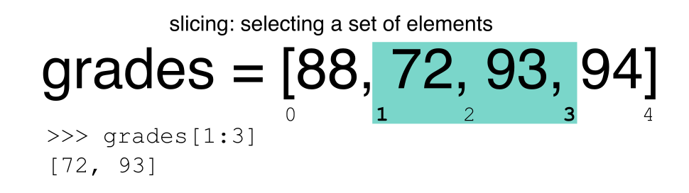
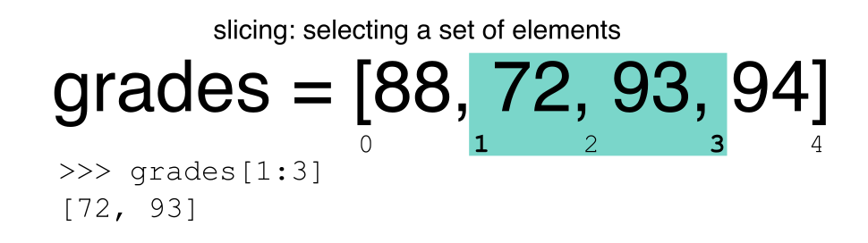
Challenge - Extracting data
What value does the code below return?
a[0]How about this:
a[5]In the example above, calling
a[5]returns an error. Why is that?What about?
a[len(a)]
Slicing Subsets of Rows in Python
Slicing using the [] operator selects a set of rows and/or columns from a
DataFrame. To slice out a set of rows, you use the following syntax:
data[start:stop]. When slicing in pandas the start bound is included in the
output. The stop bound is one step BEYOND the row you want to select. So if you
want to select rows 0, 1 and 2 your code would look like this:
# Select rows 0, 1, 2 (row 3 is not selected)
surveys_df[0:3]
The stop bound in Python is different from what you might be used to in languages like Matlab and R.
# Select the first 5 rows (rows 0, 1, 2, 3, 4)
surveys_df[:5]
# Select the last element in the list
# (the slice starts at the last element, and ends at the end of the list)
surveys_df[-1:]
We can also reassign values within subsets of our DataFrame.
But before we do that, let’s look at the difference between the concept of copying objects and the concept of referencing objects in Python.
Copying Objects vs Referencing Objects in Python
Let’s start with an example:
# Using the 'copy() method'
true_copy_surveys_df = surveys_df.copy()
# Using the '=' operator
ref_surveys_df = surveys_df
You might think that the code ref_surveys_df = surveys_df creates a fresh
distinct copy of the surveys_df DataFrame object. However, using the =
operator in the simple statement y = x does not create a copy of our
DataFrame. Instead, y = x creates a new variable y that references the
same object that x refers to. To state this another way, there is only
one object (the DataFrame), and both x and y refer to it.
In contrast, the copy() method for a DataFrame creates a true copy of the
DataFrame.
Let’s look at what happens when we reassign the values within a subset of the DataFrame that references another DataFrame object:
# Assign the value `0` to the first three rows of data in the DataFrame
ref_surveys_df[0:3] = 0
Let’s try the following code:
# ref_surveys_df was created using the '=' operator
ref_surveys_df.head()
# surveys_df is the original dataframe
surveys_df.head()
What is the difference between these two dataframes?
When we assigned the first 3 columns the value of 0 using the
ref_surveys_df DataFrame, the surveys_df DataFrame is modified too.
Remember we created the reference ref_survey_df object above when we did
ref_survey_df = surveys_df. Remember surveys_df and ref_surveys_df
refer to the same exact DataFrame object. If either one changes the object,
the other will see the same changes to the reference object.
To review and recap:
-
Copy uses the dataframe’s
copy()methodtrue_copy_surveys_df = surveys_df.copy() -
A Reference is created using the
=operatorref_surveys_df = surveys_df
Okay, that’s enough of that. Let’s create a brand new clean dataframe from the original data CSV file.
surveys_df = pd.read_csv("data/surveys.csv")
Slicing Subsets of Rows and Columns in Python
We can select specific ranges of our data in both the row and column directions using either label or integer-based indexing.
locis primarily label based indexing. Integers may be used but they are interpreted as a label.ilocis primarily integer based indexing
To select a subset of rows and columns from our DataFrame, we can use the
iloc method. For example, we can select month, day and year (columns 2, 3
and 4 if we start counting at 1), like this:
# iloc[row slicing, column slicing]
surveys_df.iloc[0:3, 1:4]
which gives the output
month day year
0 7 16 1977
1 7 16 1977
2 7 16 1977
Notice that we asked for a slice from 0:3. This yielded 3 rows of data. When you ask for 0:3, you are actually telling Python to start at index 0 and select rows 0, 1, 2 up to but not including 3.
Let’s explore some other ways to index and select subsets of data:
# Select all columns for rows of index values 0 and 10
surveys_df.loc[[0, 10], :]
# What does this do?
surveys_df.loc[0, ['species_id', 'plot_id', 'weight']]
# What happens when you type the code below?
surveys_df.loc[[0, 10, 35549], :]
NOTE: Labels must be found in the DataFrame or you will get a KeyError.
Indexing by labels loc differs from indexing by integers iloc.
With loc, both the start bound and the stop bound are inclusive. When using
loc, integers can be used, but the integers refer to the
index label and not the position. For example, using loc and select 1:4
will get a different result than using iloc to select rows 1:4.
We can also select a specific data value using a row and
column location within the DataFrame and iloc indexing:
# Syntax for iloc indexing to finding a specific data element
dat.iloc[row, column]
In this iloc example,
surveys_df.iloc[2, 6]
gives the output
'F'
Remember that Python indexing begins at 0. So, the index location [2, 6] selects the element that is 3 rows down and 7 columns over in the DataFrame.
Challenge - Range
What happens when you execute:
surveys_df[0:1]surveys_df[:4]surveys_df[:-1]What happens when you call:
surveys_df.iloc[0:4, 1:4]surveys_df.loc[0:4, 1:4]
- How are the two commands different?
Subsetting Data using Criteria
We can also select a subset of our data using criteria. For example, we can select all rows that have a year value of 2002:
surveys_df[surveys_df.year == 2002]
Which produces the following output:
record_id month day year plot_id species_id sex hindfoot_length weight
33320 33321 1 12 2002 1 DM M 38 44
33321 33322 1 12 2002 1 DO M 37 58
33322 33323 1 12 2002 1 PB M 28 45
33323 33324 1 12 2002 1 AB NaN NaN NaN
33324 33325 1 12 2002 1 DO M 35 29
...
35544 35545 12 31 2002 15 AH NaN NaN NaN
35545 35546 12 31 2002 15 AH NaN NaN NaN
35546 35547 12 31 2002 10 RM F 15 14
35547 35548 12 31 2002 7 DO M 36 51
35548 35549 12 31 2002 5 NaN NaN NaN NaN
[2229 rows x 9 columns]
Or we can select all rows that do not contain the year 2002:
surveys_df[surveys_df.year != 2002]
We can define sets of criteria too:
surveys_df[(surveys_df.year >= 1980) & (surveys_df.year <= 1985)]
Python Syntax Cheat Sheet
We can use the syntax below when querying data by criteria from a DataFrame. Experiment with selecting various subsets of the “surveys” data.
- Equals:
== - Not equals:
!= - Greater than, less than:
>or< - Greater than or equal to
>= - Less than or equal to
<=
Challenge - Queries
Select a subset of rows in the
surveys_dfDataFrame that contain data from the year 1999 and that contain weight values less than or equal to 8. How many rows did you end up with? What did your neighbor get?You can use the
isincommand in Python to query a DataFrame based upon a list of values as follows:surveys_df[surveys_df['species_id'].isin([listGoesHere])]Use the
isinfunction to find all plots that contain particular species in the “surveys” DataFrame. How many records contain these values?
Experiment with other queries. Create a query that finds all rows with a weight value > or equal to 0.
The
~symbol in Python can be used to return the OPPOSITE of the selection that you specify in Python. It is equivalent to is not in. Write a query that selects all rows with sex NOT equal to ‘M’ or ‘F’ in the “surveys” data.
Using masks to identify a specific condition
A mask can be useful to locate where a particular subset of values exist or
don’t exist - for example, NaN, or “Not a Number” values. To understand masks,
we also need to understand BOOLEAN objects in Python.
Boolean values include True or False. For example,
# Set x to 5
x = 5
# What does the code below return?
x > 5
# How about this?
x == 5
When we ask Python whether x is greater than 5, it returns False.
This is Python’s way to say “No”. Indeed, the value of x is 5,
and 5 is not greater than 5.
To create a boolean mask:
- Set the True / False criteria (e.g.
values > 5 = True) - Python will then assess each value in the object to determine whether the value meets the criteria (True) or not (False).
- Python creates an output object that is the same shape as the original
object, but with a
TrueorFalsevalue for each index location.
Let’s try this out. Let’s identify all locations in the survey data that have
null (missing or NaN) data values. We can use the isnull method to do this.
The isnull method will compare each cell with a null value. If an element
has a null value, it will be assigned a value of True in the output object.
pd.isnull(surveys_df)
A snippet of the output is below:
record_id month day year plot_id species_id sex hindfoot_length weight
0 False False False False False False False False True
1 False False False False False False False False True
2 False False False False False False False False True
3 False False False False False False False False True
4 False False False False False False False False True
[35549 rows x 9 columns]
To select the rows where there are null values, we can use the mask as an index to subset our data as follows:
# To select just the rows with NaN values, we can use the 'any()' method
surveys_df[pd.isnull(surveys_df).any(axis=1)]
Note that the weight column of our DataFrame contains many null or NaN
values. We will explore ways of dealing with this in Lesson 03.
We can run isnull on a particular column too. What does the code below do?
# What does this do?
empty_weights = surveys_df[pd.isnull(surveys_df['weight'])]['weight']
print(empty_weights)
Let’s take a minute to look at the statement above. We are using the Boolean
object pd.isnull(surveys_df['weight']) as an index to surveys_df. We are
asking Python to select rows that have a NaN value of weight.
Challenge - Putting it all together
Create a new DataFrame that only contains observations with sex values that are not female or male. Assign each sex value in the new DataFrame to a new value of ‘x’. Determine the number of null values in the subset.
Create a new DataFrame that contains only observations that are of sex male or female and where weight values are greater than 0. Create a stacked bar plot of average weight by plot with male vs female values stacked for each plot.
Key Points
In Python, portions of data can be accessed using indices, slices, column headings, and condition-based subsetting.
Python uses 0-based indexing, in which the first element in a list, tuple or any other data structure has an index of 0.
Pandas enables common data exploration steps such as data indexing, slicing and conditional subsetting.
Data Types and Formats
Overview
Teaching: 20 min
Exercises: 25 minQuestions
What types of data can be contained in a DataFrame?
Why is the data type important?
Objectives
Describe how information is stored in a Python DataFrame.
Define the two main types of data in Python: text and numerics.
Examine the structure of a DataFrame.
Modify the format of values in a DataFrame.
Describe how data types impact operations.
Define, manipulate, and interconvert integers and floats in Python.
Analyze datasets having missing/null values (NaN values).
Write manipulated data to a file.
The format of individual columns and rows will impact analysis performed on a dataset read into Python. For example, you can’t perform mathematical calculations on a string (text formatted data). This might seem obvious, however sometimes numeric values are read into Python as strings. In this situation, when you then try to perform calculations on the string-formatted numeric data, you get an error.
In this lesson we will review ways to explore and better understand the structure and format of our data.
Types of Data
How information is stored in a DataFrame or a Python object affects what we can do with it and the outputs of calculations as well. There are two main types of data that we will explore in this lesson: numeric and text data types.
Numeric Data Types
Numeric data types include integers and floats. A floating point (known as a float) number has decimal points even if that decimal point value is 0. For example: 1.13, 2.0, 1234.345. If we have a column that contains both integers and floating point numbers, Pandas will assign the entire column to the float data type so the decimal points are not lost.
An integer will never have a decimal point. Thus if we wanted to store 1.13 as
an integer it would be stored as 1. Similarly, 1234.345 would be stored as 1234. You
will often see the data type Int64 in Python which stands for 64 bit integer. The 64
refers to the memory allocated to store data in each cell which effectively
relates to how many digits it can store in each “cell”. Allocating space ahead of time
allows computers to optimize storage and processing efficiency.
Text Data Type
Text data type is known as Strings in Python, or Objects in Pandas. Strings can contain numbers and / or characters. For example, a string might be a word, a sentence, or several sentences. A Pandas object might also be a plot name like ‘plot1’. A string can also contain or consist of numbers. For instance, ‘1234’ could be stored as a string, as could ‘10.23’. However strings that contain numbers can not be used for mathematical operations!
Pandas and base Python use slightly different names for data types. More on this is in the table below:
| Pandas Type | Native Python Type | Description |
|---|---|---|
| object | string | The most general dtype. Will be assigned to your column if column has mixed types (numbers and strings). |
| int64 | int | Numeric characters. 64 refers to the memory allocated to hold this character. |
| float64 | float | Numeric characters with decimals. If a column contains numbers and NaNs (see below), pandas will default to float64, in case your missing value has a decimal. |
| datetime64, timedelta[ns] | N/A (but see the datetime module in Python’s standard library) | Values meant to hold time data. Look into these for time series experiments. |
Checking the format of our data
Now that we’re armed with a basic understanding of numeric and text data
types, let’s explore the format of our survey data. We’ll be working with the
same surveys.csv dataset that we’ve used in previous lessons.
# Make sure pandas is loaded
import pandas as pd
# Note that pd.read_csv is used because we imported pandas as pd
surveys_df = pd.read_csv("data/surveys.csv")
Remember that we can check the type of an object like this:
type(surveys_df)
pandas.core.frame.DataFrame
Next, let’s look at the structure of our surveys data. In pandas, we can check
the type of one column in a DataFrame using the syntax
dataFrameName[column_name].dtype:
surveys_df['sex'].dtype
dtype('O')
A type ‘O’ just stands for “object” which in Pandas’ world is a string (text).
surveys_df['record_id'].dtype
dtype('int64')
The type int64 tells us that Python is storing each value within this column
as a 64 bit integer. We can use the dat.dtypes command to view the data type
for each column in a DataFrame (all at once).
surveys_df.dtypes
which returns:
record_id int64
month int64
day int64
year int64
plot_id int64
species_id object
sex object
hindfoot_length float64
weight float64
dtype: object
Note that most of the columns in our Survey data are of type int64. This means
that they are 64 bit integers. But the weight column is a floating point value
which means it contains decimals. The species_id and sex columns are objects which
means they contain strings.
Working With Integers and Floats
So we’ve learned that computers store numbers in one of two ways: as integers or as floating-point numbers (or floats). Integers are the numbers we usually count with. Floats have fractional parts (decimal places). Let’s next consider how the data type can impact mathematical operations on our data. Addition, subtraction, division and multiplication work on floats and integers as we’d expect.
print(5+5)
10
print(24-4)
20
If we divide one integer by another, we get a float. The result on Python 3 is different than in Python 2, where the result is an integer (integer division).
print(5/9)
0.5555555555555556
print(10/3)
3.3333333333333335
We can also convert a floating point number to an integer or an integer to floating point number. Notice that Python by default rounds down when it converts from floating point to integer.
# Convert a to an integer
a = 7.83
int(a)
7
# Convert b to a float
b = 7
float(b)
7.0
Working With Our Survey Data
Getting back to our data, we can modify the format of values within our data, if
we want. For instance, we could convert the record_id field to floating point
values.
# Convert the record_id field from an integer to a float
surveys_df['record_id'] = surveys_df['record_id'].astype('float64')
surveys_df['record_id'].dtype
dtype('float64')
Changing Types
Try converting the column
plot_idto floats usingsurveys_df.plot_id.astype("float")Next try converting
weightto an integer. What goes wrong here? What is Pandas telling you? We will talk about some solutions to this later.
Missing Data Values - NaN
What happened in the last challenge activity? Notice that this throws a value error:
ValueError: Cannot convert NA to integer. If we look at the weight column in the surveys
data we notice that there are NaN (Not a Number) values. NaN values are undefined
values that cannot be represented mathematically. Pandas, for example, will read
an empty cell in a CSV or Excel sheet as a NaN. NaNs have some desirable properties: if we
were to average the weight column without replacing our NaNs, Python would know to skip
over those cells.
surveys_df['weight'].mean()
42.672428212991356
Dealing with missing data values is always a challenge. It’s sometimes hard to know why values are missing - was it because of a data entry error? Or data that someone was unable to collect? Should the value be 0? We need to know how missing values are represented in the dataset in order to make good decisions. If we’re lucky, we have some metadata that will tell us more about how null values were handled.
For instance, in some disciplines, like Remote Sensing, missing data values are often defined as -9999. Having a bunch of -9999 values in your data could really alter numeric calculations. Often in spreadsheets, cells are left empty where no data are available. Pandas will, by default, replace those missing values with NaN. However it is good practice to get in the habit of intentionally marking cells that have no data, with a no data value! That way there are no questions in the future when you (or someone else) explores your data.
Where Are the NaN’s?
Let’s explore the NaN values in our data a bit further. Using the tools we learned in lesson 02, we can figure out how many rows contain NaN values for weight. We can also create a new subset from our data that only contains rows with weight values > 0 (i.e., select meaningful weight values):
len(surveys_df[pd.isnull(surveys_df.weight)])
# How many rows have weight values?
len(surveys_df[surveys_df.weight > 0])
We can replace all NaN values with zeroes using the .fillna() method (after
making a copy of the data so we don’t lose our work):
df1 = surveys_df.copy()
# Fill all NaN values with 0
df1['weight'] = df1['weight'].fillna(0)
However NaN and 0 yield different analysis results. The mean value when NaN values are replaced with 0 is different from when NaN values are simply thrown out or ignored.
df1['weight'].mean()
38.751976145601844
We can fill NaN values with any value that we chose. The code below fills all NaN values with a mean for all weight values.
df1['weight'] = surveys_df['weight'].fillna(surveys_df['weight'].mean())
We could also chose to create a subset of our data, only keeping rows that do not contain NaN values.
The point is to make conscious decisions about how to manage missing data. This is where we think about how our data will be used and how these values will impact the scientific conclusions made from the data.
Python gives us all of the tools that we need to account for these issues. We just need to be cautious about how the decisions that we make impact scientific results.
Counting
Count the number of missing values per column.
Hint
Writing Out Data to CSV
We’ve learned about using manipulating data to get desired outputs. But we’ve also discussed keeping data that has been manipulated separate from our raw data. Something we might be interested in doing is working with only the columns that have full data. First, let’s reload the data so we’re not mixing up all of our previous manipulations.
surveys_df = pd.read_csv("data/surveys.csv")
Next, let’s drop all the rows that contain missing values. We will use the command dropna.
By default, dropna removes rows that contain missing data for even just one column.
df_na = surveys_df.dropna()
If you now type df_na, you should observe that the resulting DataFrame has 30676 rows
and 9 columns, much smaller than the 35549 row original.
We can now use the to_csv command to export a DataFrame in CSV format. Note that the code
below will by default save the data into the current working directory. We can
save it to a different folder by adding the foldername and a slash before the filename:
df.to_csv('foldername/out.csv'). We use ‘index=False’ so that
pandas doesn’t include the index number for each line.
# Write DataFrame to CSV
df_na.to_csv('data_output/surveys_complete.csv', index=False)
We will use this data file later in the workshop. Check out your working directory to make sure the CSV wrote out properly, and that you can open it! If you want, try to bring it back into Python to make sure it imports properly.
Recap
What we’ve learned:
- How to explore the data types of columns within a DataFrame
- How to change the data type
- What NaN values are, how they might be represented, and what this means for your work
- How to replace NaN values, if desired
- How to use
to_csvto write manipulated data to a file.
Key Points
Pandas uses other names for data types than Python, for example:
objectfor textual data.A column in a DataFrame can only have one data type.
The data type in a DataFrame’s single column can be checked using
dtype.Make conscious decisions about how to manage missing data.
A DataFrame can be saved to a CSV file using the
to_csvfunction.
Combining DataFrames with Pandas
Overview
Teaching: 20 min
Exercises: 25 minQuestions
Can I work with data from multiple sources?
How can I combine data from different data sets?
Objectives
Combine data from multiple files into a single DataFrame using merge and concat.
Combine two DataFrames using a unique ID found in both DataFrames.
Employ
to_csvto export a DataFrame in CSV format.Join DataFrames using common fields (join keys).
In many “real world” situations, the data that we want to use come in multiple
files. We often need to combine these files into a single DataFrame to analyze
the data. The pandas package provides various methods for combining
DataFrames including
merge and concat.
To work through the examples below, we first need to load the species and surveys files into pandas DataFrames. In iPython:
import pandas as pd
surveys_df = pd.read_csv("data/surveys.csv",
keep_default_na=False, na_values=[""])
surveys_df
record_id month day year plot species sex hindfoot_length weight
0 1 7 16 1977 2 NA M 32 NaN
1 2 7 16 1977 3 NA M 33 NaN
2 3 7 16 1977 2 DM F 37 NaN
3 4 7 16 1977 7 DM M 36 NaN
4 5 7 16 1977 3 DM M 35 NaN
... ... ... ... ... ... ... ... ... ...
35544 35545 12 31 2002 15 AH NaN NaN NaN
35545 35546 12 31 2002 15 AH NaN NaN NaN
35546 35547 12 31 2002 10 RM F 15 14
35547 35548 12 31 2002 7 DO M 36 51
35548 35549 12 31 2002 5 NaN NaN NaN NaN
[35549 rows x 9 columns]
species_df = pd.read_csv("data/species.csv",
keep_default_na=False, na_values=[""])
species_df
species_id genus species taxa
0 AB Amphispiza bilineata Bird
1 AH Ammospermophilus harrisi Rodent
2 AS Ammodramus savannarum Bird
3 BA Baiomys taylori Rodent
4 CB Campylorhynchus brunneicapillus Bird
.. ... ... ... ...
49 UP Pipilo sp. Bird
50 UR Rodent sp. Rodent
51 US Sparrow sp. Bird
52 ZL Zonotrichia leucophrys Bird
53 ZM Zenaida macroura Bird
[54 rows x 4 columns]
Take note that the read_csv method we used can take some additional options which
we didn’t use previously. Many functions in Python have a set of options that
can be set by the user if needed. In this case, we have told pandas to assign
empty values in our CSV to NaN keep_default_na=False, na_values=[""].
More about all of the read_csv options here.
Concatenating DataFrames
We can use the concat function in pandas to append either columns or rows from
one DataFrame to another. Let’s grab two subsets of our data to see how this
works.
# Read in first 10 lines of surveys table
survey_sub = surveys_df.head(10)
# Grab the last 10 rows
survey_sub_last10 = surveys_df.tail(10)
# Reset the index values to the second dataframe appends properly
survey_sub_last10 = survey_sub_last10.reset_index(drop=True)
# drop=True option avoids adding new index column with old index values
When we concatenate DataFrames, we need to specify the axis. axis=0 tells
pandas to stack the second DataFrame UNDER the first one. It will automatically
detect whether the column names are the same and will stack accordingly.
axis=1 will stack the columns in the second DataFrame to the RIGHT of the
first DataFrame. To stack the data vertically, we need to make sure we have the
same columns and associated column format in both datasets. When we stack
horizontally, we want to make sure what we are doing makes sense (i.e. the data are
related in some way).
# Stack the DataFrames on top of each other
vertical_stack = pd.concat([survey_sub, survey_sub_last10], axis=0)
# Place the DataFrames side by side
horizontal_stack = pd.concat([survey_sub, survey_sub_last10], axis=1)
Row Index Values and Concat
Have a look at the vertical_stack dataframe? Notice anything unusual?
The row indexes for the two data frames survey_sub and survey_sub_last10
have been repeated. We can reindex the new dataframe using the reset_index() method.
Writing Out Data to CSV
We can use the to_csv command to do export a DataFrame in CSV format. Note that the code
below will by default save the data into the current working directory. We can
save it to a different folder by adding the foldername and a slash to the file
vertical_stack.to_csv('foldername/out.csv'). We use the ‘index=False’ so that
pandas doesn’t include the index number for each line.
# Write DataFrame to CSV
vertical_stack.to_csv('data_output/out.csv', index=False)
Check out your working directory to make sure the CSV wrote out properly, and that you can open it! If you want, try to bring it back into Python to make sure it imports properly.
# For kicks read our output back into Python and make sure all looks good
new_output = pd.read_csv('data_output/out.csv', keep_default_na=False, na_values=[""])
Challenge - Combine Data
In the data folder, there are two survey data files:
surveys2001.csvandsurveys2002.csv. Read the data into Python and combine the files to make one new data frame. Create a plot of average plot weight by year grouped by sex. Export your results as a CSV and make sure it reads back into Python properly.
Joining DataFrames
When we concatenated our DataFrames we simply added them to each other - stacking them either vertically or side by side. Another way to combine DataFrames is to use columns in each dataset that contain common values (a common unique id). Combining DataFrames using a common field is called “joining”. The columns containing the common values are called “join key(s)”. Joining DataFrames in this way is often useful when one DataFrame is a “lookup table” containing additional data that we want to include in the other.
NOTE: This process of joining tables is similar to what we do with tables in an SQL database.
For example, the species.csv file that we’ve been working with is a lookup
table. This table contains the genus, species and taxa code for 55 species. The
species code is unique for each line. These species are identified in our survey
data as well using the unique species code. Rather than adding 3 more columns
for the genus, species and taxa to each of the 35,549 line Survey data table, we
can maintain the shorter table with the species information. When we want to
access that information, we can create a query that joins the additional columns
of information to the Survey data.
Storing data in this way has many benefits including:
- It ensures consistency in the spelling of species attributes (genus, species and taxa) given each species is only entered once. Imagine the possibilities for spelling errors when entering the genus and species thousands of times!
- It also makes it easy for us to make changes to the species information once without having to find each instance of it in the larger survey data.
- It optimizes the size of our data.
Joining Two DataFrames
To better understand joins, let’s grab the first 10 lines of our data as a
subset to work with. We’ll use the .head method to do this. We’ll also read
in a subset of the species table.
# Read in first 10 lines of surveys table
survey_sub = surveys_df.head(10)
# Import a small subset of the species data designed for this part of the lesson.
# It is stored in the data folder.
species_sub = pd.read_csv('data/speciesSubset.csv', keep_default_na=False, na_values=[""])
In this example, species_sub is the lookup table containing genus, species, and
taxa names that we want to join with the data in survey_sub to produce a new
DataFrame that contains all of the columns from both species_df and
survey_df.
Identifying join keys
To identify appropriate join keys we first need to know which field(s) are shared between the files (DataFrames). We might inspect both DataFrames to identify these columns. If we are lucky, both DataFrames will have columns with the same name that also contain the same data. If we are less lucky, we need to identify a (differently-named) column in each DataFrame that contains the same information.
>>> species_sub.columns
Index([u'species_id', u'genus', u'species', u'taxa'], dtype='object')
>>> survey_sub.columns
Index([u'record_id', u'month', u'day', u'year', u'plot_id', u'species_id',
u'sex', u'hindfoot_length', u'weight'], dtype='object')
In our example, the join key is the column containing the two-letter species
identifier, which is called species_id.
Now that we know the fields with the common species ID attributes in each DataFrame, we are almost ready to join our data. However, since there are different types of joins, we also need to decide which type of join makes sense for our analysis.
Inner joins
The most common type of join is called an inner join. An inner join combines two DataFrames based on a join key and returns a new DataFrame that contains only those rows that have matching values in both of the original DataFrames.
Inner joins yield a DataFrame that contains only rows where the value being joined exists in BOTH tables. An example of an inner join, adapted from Jeff Atwood’s blogpost about SQL joins is below:

The pandas function for performing joins is called merge and an Inner join is
the default option:
merged_inner = pd.merge(left=survey_sub, right=species_sub, left_on='species_id', right_on='species_id')
# In this case `species_id` is the only column name in both dataframes, so if we skipped `left_on`
# And `right_on` arguments we would still get the same result
# What's the size of the output data?
merged_inner.shape
merged_inner
record_id month day year plot_id species_id sex hindfoot_length \
0 1 7 16 1977 2 NL M 32
1 2 7 16 1977 3 NL M 33
2 3 7 16 1977 2 DM F 37
3 4 7 16 1977 7 DM M 36
4 5 7 16 1977 3 DM M 35
5 8 7 16 1977 1 DM M 37
6 9 7 16 1977 1 DM F 34
7 7 7 16 1977 2 PE F NaN
weight genus species taxa
0 NaN Neotoma albigula Rodent
1 NaN Neotoma albigula Rodent
2 NaN Dipodomys merriami Rodent
3 NaN Dipodomys merriami Rodent
4 NaN Dipodomys merriami Rodent
5 NaN Dipodomys merriami Rodent
6 NaN Dipodomys merriami Rodent
7 NaN Peromyscus eremicus Rodent
The result of an inner join of survey_sub and species_sub is a new DataFrame
that contains the combined set of columns from survey_sub and species_sub. It
only contains rows that have two-letter species codes that are the same in
both the survey_sub and species_sub DataFrames. In other words, if a row in
survey_sub has a value of species_id that does not appear in the species_id
column of species, it will not be included in the DataFrame returned by an
inner join. Similarly, if a row in species_sub has a value of species_id
that does not appear in the species_id column of survey_sub, that row will not
be included in the DataFrame returned by an inner join.
The two DataFrames that we want to join are passed to the merge function using
the left and right argument. The left_on='species' argument tells merge
to use the species_id column as the join key from survey_sub (the left
DataFrame). Similarly , the right_on='species_id' argument tells merge to
use the species_id column as the join key from species_sub (the right
DataFrame). For inner joins, the order of the left and right arguments does
not matter.
The result merged_inner DataFrame contains all of the columns from survey_sub
(record id, month, day, etc.) as well as all the columns from species_sub
(species_id, genus, species, and taxa).
Notice that merged_inner has fewer rows than survey_sub. This is an
indication that there were rows in surveys_df with value(s) for species_id that
do not exist as value(s) for species_id in species_df.
Left joins
What if we want to add information from species_sub to survey_sub without
losing any of the information from survey_sub? In this case, we use a different
type of join called a “left outer join”, or a “left join”.
Like an inner join, a left join uses join keys to combine two DataFrames. Unlike
an inner join, a left join will return all of the rows from the left
DataFrame, even those rows whose join key(s) do not have values in the right
DataFrame. Rows in the left DataFrame that are missing values for the join
key(s) in the right DataFrame will simply have null (i.e., NaN or None) values
for those columns in the resulting joined DataFrame.
Note: a left join will still discard rows from the right DataFrame that do not
have values for the join key(s) in the left DataFrame.
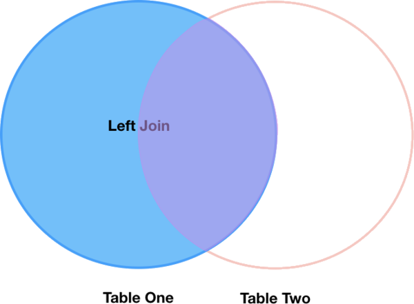
A left join is performed in pandas by calling the same merge function used for
inner join, but using the how='left' argument:
merged_left = pd.merge(left=survey_sub, right=species_sub, how='left', left_on='species_id', right_on='species_id')
merged_left
record_id month day year plot_id species_id sex hindfoot_length \
0 1 7 16 1977 2 NL M 32
1 2 7 16 1977 3 NL M 33
2 3 7 16 1977 2 DM F 37
3 4 7 16 1977 7 DM M 36
4 5 7 16 1977 3 DM M 35
5 6 7 16 1977 1 PF M 14
6 7 7 16 1977 2 PE F NaN
7 8 7 16 1977 1 DM M 37
8 9 7 16 1977 1 DM F 34
9 10 7 16 1977 6 PF F 20
weight genus species taxa
0 NaN Neotoma albigula Rodent
1 NaN Neotoma albigula Rodent
2 NaN Dipodomys merriami Rodent
3 NaN Dipodomys merriami Rodent
4 NaN Dipodomys merriami Rodent
5 NaN NaN NaN NaN
6 NaN Peromyscus eremicus Rodent
7 NaN Dipodomys merriami Rodent
8 NaN Dipodomys merriami Rodent
9 NaN NaN NaN NaN
The result DataFrame from a left join (merged_left) looks very much like the
result DataFrame from an inner join (merged_inner) in terms of the columns it
contains. However, unlike merged_inner, merged_left contains the same
number of rows as the original survey_sub DataFrame. When we inspect
merged_left, we find there are rows where the information that should have
come from species_sub (i.e., species_id, genus, and taxa) is
missing (they contain NaN values):
merged_left[ pd.isnull(merged_left.genus) ]
record_id month day year plot_id species_id sex hindfoot_length \
5 6 7 16 1977 1 PF M 14
9 10 7 16 1977 6 PF F 20
weight genus species taxa
5 NaN NaN NaN NaN
9 NaN NaN NaN NaN
These rows are the ones where the value of species_id from survey_sub (in this
case, PF) does not occur in species_sub.
Other join types
The pandas merge function supports two other join types:
- Right (outer) join: Invoked by passing
how='right'as an argument. Similar to a left join, except all rows from therightDataFrame are kept, while rows from theleftDataFrame without matching join key(s) values are discarded. - Full (outer) join: Invoked by passing
how='outer'as an argument. This join type returns the all pairwise combinations of rows from both DataFrames; i.e., the result DataFrame willNaNwhere data is missing in one of the dataframes. This join type is very rarely used.
Final Challenges
Challenge - Distributions
Create a new DataFrame by joining the contents of the
surveys.csvandspecies.csvtables. Then calculate and plot the distribution of:
- taxa by plot
- taxa by sex by plot
Challenge - Diversity Index
- In the data folder, there is a
plots.csvfile that contains information about the type associated with each plot. Use that data to summarize the number of plots by plot type.Calculate a diversity index of your choice for control vs rodent exclosure plots. The index should consider both species abundance and number of species. You might choose to use the simple biodiversity index described here which calculates diversity as:
the number of species in the plot / the total number of individuals in the plot = Biodiversity index.
Key Points
Pandas’
mergeandconcatcan be used to combine subsets of a DataFrame, or even data from different files.
joinfunction combines DataFrames based on index or column.Joining two DataFrames can be done in multiple ways (left, right, and inner) depending on what data must be in the final DataFrame.
to_csvcan be used to write out DataFrames in CSV format.
Data Workflows and Automation
Overview
Teaching: 40 min
Exercises: 50 minQuestions
Can I automate operations in Python?
What are functions and why should I use them?
Objectives
Describe why for loops are used in Python.
Employ for loops to automate data analysis.
Write unique filenames in Python.
Build reusable code in Python.
Write functions using conditional statements (if, then, else).
So far, we’ve used Python and the pandas library to explore and manipulate individual datasets by hand, much like we would do in a spreadsheet. The beauty of using a programming language like Python, though, comes from the ability to automate data processing through the use of loops and functions.
For loops
Loops allow us to repeat a workflow (or series of actions) a given number of times or while some condition is true. We would use a loop to automatically process data that’s stored in multiple files (daily values with one file per year, for example). Loops lighten our work load by performing repeated tasks without our direct involvement and make it less likely that we’ll introduce errors by making mistakes while processing each file by hand.
Let’s write a simple for loop that simulates what a kid might see during a visit to the zoo:
animals = ['lion', 'tiger', 'crocodile', 'vulture', 'hippo']
print(animals)
['lion', 'tiger', 'crocodile', 'vulture', 'hippo']
for creature in animals:
print(creature)
lion
tiger
crocodile
vulture
hippo
The line defining the loop must start with for and end with a colon, and the
body of the loop must be indented.
In this example, creature is the loop variable that takes the value of the next
entry in animals every time the loop goes around. We can call the loop variable
anything we like. After the loop finishes, the loop variable will still exist
and will have the value of the last entry in the collection:
animals = ['lion', 'tiger', 'crocodile', 'vulture', 'hippo']
for creature in animals:
pass
print('The loop variable is now: ' + creature)
The loop variable is now: hippo
We are not asking Python to print the value of the loop variable anymore, but
the for loop still runs and the value of creature changes on each pass through
the loop. The statement pass in the body of the loop means “do nothing”.
Challenge - Loops
What happens if we don’t include the
passstatement?Rewrite the loop so that the animals are separated by commas, not new lines (Hint: You can concatenate strings using a plus sign. For example,
print(string1 + string2)outputs ‘string1string2’).
Automating data processing using For Loops
The file we’ve been using so far, surveys.csv, contains 25 years of data and is
very large. We would like to separate the data for each year into a separate
file.
Let’s start by making a new directory inside the folder data to store all of
these files using the module os:
import os
os.mkdir('data/yearly_files')
The command os.mkdir is equivalent to mkdir in the shell. Just so we are
sure, we can check that the new directory was created within the data folder:
os.listdir('data')
['plots.csv',
'portal_mammals.sqlite',
'species.csv',
'survey2001.csv',
'survey2002.csv',
'surveys.csv',
'surveys2002_temp.csv',
'yearly_files']
The command os.listdir is equivalent to ls in the shell.
In previous lessons, we saw how to use the library pandas to load the species data into memory as a DataFrame, how to select a subset of the data using some criteria, and how to write the DataFrame into a CSV file. Let’s write a script that performs those three steps in sequence for the year 2002:
import pandas as pd
# Load the data into a DataFrame
surveys_df = pd.read_csv('data/surveys.csv')
# Select only data for the year 2002
surveys2002 = surveys_df[surveys_df.year == 2002]
# Write the new DataFrame to a CSV file
surveys2002.to_csv('data/yearly_files/surveys2002.csv')
To create yearly data files, we could repeat the last two commands over and over, once for each year of data. Repeating code is neither elegant nor practical, and is very likely to introduce errors into your code. We want to turn what we’ve just written into a loop that repeats the last two commands for every year in the dataset.
Let’s start by writing a loop that prints the names of the files we want to create - the dataset we are using covers 1977 through 2002, and we’ll create a separate file for each of those years. Listing the filenames is a good way to confirm that the loop is behaving as we expect.
We have seen that we can loop over a list of items, so we need a list of years to loop over. We can get the years in our DataFrame with:
surveys_df['year']
0 1977
1 1977
2 1977
3 1977
...
35545 2002
35546 2002
35547 2002
35548 2002
but we want only unique years, which we can get using the unique method
which we have already seen.
surveys_df['year'].unique()
array([1977, 1978, 1979, 1980, 1981, 1982, 1983, 1984, 1985, 1986, 1987,
1988, 1989, 1990, 1991, 1992, 1993, 1994, 1995, 1996, 1997, 1998,
1999, 2000, 2001, 2002], dtype=int64)
Putting this into our for loop we get
for year in surveys_df['year'].unique():
filename='data/yearly_files/surveys' + str(year) + '.csv'
print(filename)
data/yearly_files/surveys1977.csv
data/yearly_files/surveys1978.csv
data/yearly_files/surveys1979.csv
data/yearly_files/surveys1980.csv
data/yearly_files/surveys1981.csv
data/yearly_files/surveys1982.csv
data/yearly_files/surveys1983.csv
data/yearly_files/surveys1984.csv
data/yearly_files/surveys1985.csv
data/yearly_files/surveys1986.csv
data/yearly_files/surveys1987.csv
data/yearly_files/surveys1988.csv
data/yearly_files/surveys1989.csv
data/yearly_files/surveys1990.csv
data/yearly_files/surveys1991.csv
data/yearly_files/surveys1992.csv
data/yearly_files/surveys1993.csv
data/yearly_files/surveys1994.csv
data/yearly_files/surveys1995.csv
data/yearly_files/surveys1996.csv
data/yearly_files/surveys1997.csv
data/yearly_files/surveys1998.csv
data/yearly_files/surveys1999.csv
data/yearly_files/surveys2000.csv
data/yearly_files/surveys2001.csv
data/yearly_files/surveys2002.csv
We can now add the rest of the steps we need to create separate text files:
# Load the data into a DataFrame
surveys_df = pd.read_csv('data/surveys.csv')
for year in surveys_df['year'].unique():
# Select data for the year
surveys_year = surveys_df[surveys_df.year == year]
# Write the new DataFrame to a CSV file
filename = 'data/yearly_files/surveys' + str(year) + '.csv'
surveys_year.to_csv(filename)
Look inside the yearly_files directory and check a couple of the files you
just created to confirm that everything worked as expected.
Writing Unique File Names
Notice that the code above created a unique filename for each year.
filename = 'data/yearly_files/surveys' + str(year) + '.csv'
Let’s break down the parts of this name:
- The first part is some text that specifies the directory to store our
data file in (data/yearly_files/) and the first part of the file name
(surveys):
'data/yearly_files/surveys' - We can concatenate this with the value of a variable, in this case
yearby using the plus+sign and the variable we want to add to the file name:+ str(year) - Then we add the file extension as another text string:
+ '.csv'
Notice that we use single quotes to add text strings. The variable is not
surrounded by quotes. This code produces the string
data/yearly_files/surveys2002.csv which contains the path to the new filename
AND the file name itself.
Challenge - Modifying loops
Some of the surveys you saved are missing data (they have null values that show up as NaN - Not A Number - in the DataFrames and do not show up in the text files). Modify the for loop so that the entries with null values are not included in the yearly files.
Let’s say you only want to look at data from a given multiple of years. How would you modify your loop in order to generate a data file for only every 5th year, starting from 1977?
Instead of splitting out the data by years, a colleague wants to do analyses each species separately. How would you write a unique CSV file for each species?
Building reusable and modular code with functions
Suppose that separating large data files into individual yearly files is a task that we frequently have to perform. We could write a for loop like the one above every time we needed to do it but that would be time consuming and error prone. A more elegant solution would be to create a reusable tool that performs this task with minimum input from the user. To do this, we are going to turn the code we’ve already written into a function.
Functions are reusable, self-contained pieces of code that are called with a single command. They can be designed to accept arguments as input and return values, but they don’t need to do either. Variables declared inside functions only exist while the function is running and if a variable within the function (a local variable) has the same name as a variable somewhere else in the code, the local variable hides but doesn’t overwrite the other.
Every method used in Python (for example, print) is a function, and the
libraries we import (say, pandas) are a collection of functions. We will only
use functions that are housed within the same code that uses them, but
we can also write functions that can be used by different programs.
Functions are declared following this general structure:
def this_is_the_function_name(input_argument1, input_argument2):
# The body of the function is indented
# This function prints the two arguments to screen
print('The function arguments are:', input_argument1, input_argument2, '(this is done inside the function!)')
# And returns their product
return input_argument1 * input_argument2
The function declaration starts with the word def, followed by the function
name and any arguments in parenthesis, and ends in a colon. The body of the
function is indented just like loops are. If the function returns something when
it is called, it includes a return statement at the end.
This is how we call the function:
product_of_inputs = this_is_the_function_name(2, 5)
The function arguments are: 2 5 (this is done inside the function!)
print('Their product is:', product_of_inputs, '(this is done outside the function!)')
Their product is: 10 (this is done outside the function!)
Challenge - Functions
- Change the values of the arguments in the function and check its output
- Try calling the function by giving it the wrong number of arguments (not 2) or not assigning the function call to a variable (no
product_of_inputs =)- Declare a variable inside the function and test to see where it exists (Hint: can you print it from outside the function?)
- Explore what happens when a variable both inside and outside the function have the same name. What happens to the global variable when you change the value of the local variable?
We can now turn our code for saving yearly data files into a function. There are many different “chunks” of this code that we can turn into functions, and we can even create functions that call other functions inside them. Let’s first write a function that separates data for just one year and saves that data to a file:
def one_year_csv_writer(this_year, all_data):
"""
Writes a csv file for data from a given year.
this_year -- year for which data is extracted
all_data -- DataFrame with multi-year data
"""
# Select data for the year
surveys_year = all_data[all_data.year == this_year]
# Write the new DataFrame to a csv file
filename = 'data/yearly_files/function_surveys' + str(this_year) + '.csv'
surveys_year.to_csv(filename)
The text between the two sets of triple double quotes is called a docstring and contains the documentation for the function. It does nothing when the function is running and is therefore not necessary, but it is good practice to include docstrings as a reminder of what the code does. Docstrings in functions also become part of their ‘official’ documentation:
one_year_csv_writer?
one_year_csv_writer(2002, surveys_df)
We changed the root of the name of the CSV file so we can distinguish it from
the one we wrote before. Check the yearly_files directory for the file. Did it
do what you expect?
What we really want to do, though, is create files for multiple years without
having to request them one by one. Let’s write another function that replaces
the entire for loop by looping through a sequence of years and repeatedly
calling the function we just wrote, one_year_csv_writer:
def yearly_data_csv_writer(start_year, end_year, all_data):
"""
Writes separate CSV files for each year of data.
start_year -- the first year of data we want
end_year -- the last year of data we want
all_data -- DataFrame with multi-year data
"""
# "end_year" is the last year of data we want to pull, so we loop to end_year+1
for year in range(start_year, end_year+1):
one_year_csv_writer(year, all_data)
Because people will naturally expect that the end year for the files is the last
year with data, the for loop inside the function ends at end_year + 1. By
writing the entire loop into a function, we’ve made a reusable tool for whenever
we need to break a large data file into yearly files. Because we can specify the
first and last year for which we want files, we can even use this function to
create files for a subset of the years available. This is how we call this
function:
# Load the data into a DataFrame
surveys_df = pd.read_csv('data/surveys.csv')
# Create CSV files
yearly_data_csv_writer(1977, 2002, surveys_df)
BEWARE! If you are using IPython Notebooks and you modify a function, you MUST re-run that cell in order for the changed function to be available to the rest of the code. Nothing will visibly happen when you do this, though, because defining a function without calling it doesn’t produce an output. Any cells that use the now-changed functions will also have to be re-run for their output to change.
Challenge: More functions
- Add two arguments to the functions we wrote that take the path of the directory where the files will be written and the root of the file name. Create a new set of files with a different name in a different directory.
- How could you use the function
yearly_data_csv_writerto create a CSV file for only one year? (Hint: think about the syntax forrange)- Make the functions return a list of the files they have written. There are many ways you can do this (and you should try them all!): either of the functions can print to screen, either can use a return statement to give back numbers or strings to their function call, or you can use some combination of the two. You could also try using the
oslibrary to list the contents of directories.- Explore what happens when variables are declared inside each of the functions versus in the main (non-indented) body of your code. What is the scope of the variables (where are they visible)? What happens when they have the same name but are given different values?
The functions we wrote demand that we give them a value for every argument.
Ideally, we would like these functions to be as flexible and independent as
possible. Let’s modify the function yearly_data_csv_writer so that the
start_year and end_year default to the full range of the data if they are
not supplied by the user. Arguments can be given default values with an equal
sign in the function declaration. Any arguments in the function without default
values (here, all_data) is a required argument and MUST come before the
argument with default values (which are optional in the function call).
def yearly_data_arg_test(all_data, start_year=1977, end_year=2002):
"""
Modified from yearly_data_csv_writer to test default argument values!
start_year -- the first year of data we want (default 1977)
end_year -- the last year of data we want (default 2002)
all_data -- DataFrame with multi-year data
"""
return start_year, end_year
start, end = yearly_data_arg_test(surveys_df, 1988, 1993)
print('Both optional arguments:\t', start, end)
start, end = yearly_data_arg_test(surveys_df)
print('Default values:\t\t\t', start, end)
Both optional arguments: 1988 1993
Default values: 1977 2002
The “\t” in the print statements are tabs, used to make the text align and be
easier to read.
But what if our dataset doesn’t start in 1977 and end in 2002? We can modify the function so that it looks for the start and end years in the dataset if those dates are not provided:
def yearly_data_arg_test(all_data, start_year=None, end_year=None):
"""
Modified from yearly_data_csv_writer to test default argument values!
all_data -- DataFrame with multi-year data
start_year -- the first year of data we want, Check all_data! (default None)
end_year -- the last year of data we want; Check all_data! (default None)
"""
if start_year is None:
start_year = min(all_data.year)
if end_year is None:
end_year = max(all_data.year)
return start_year, end_year
start, end = yearly_data_arg_test(surveys_df, 1988, 1993)
print('Both optional arguments:\t', start, end)
start, end = yearly_data_arg_test(surveys_df)
print('Default values:\t\t\t', start, end)
Both optional arguments: 1988 1993
Default values: 1977 2002
The default values of the start_year and end_year arguments in the function
yearly_data_arg_test are now None. This is a built-in constant in Python
that indicates the absence of a value - essentially, that the variable exists in
the namespace of the function (the directory of variable names) but that it
doesn’t correspond to any existing object.
Challenge - Variables
What type of object corresponds to a variable declared as
None? (Hint: create a variable set toNoneand use the functiontype())Compare the behavior of the function
yearly_data_arg_testwhen the arguments haveNoneas a default and when they do not have default values.What happens if you only include a value for
start_yearin the function call? Can you write the function call with only a value forend_year? (Hint: think about how the function must be assigning values to each of the arguments - this is related to the need to put the arguments without default values before those with default values in the function definition!)
If Statements
The body of the test function now has two conditionals (if statements) that
check the values of start_year and end_year. If statements execute a segment
of code when some condition is met. They commonly look something like this:
a = 5
if a<0: # Meets first condition?
# if a IS less than zero
print('a is a negative number')
elif a>0: # Did not meet first condition. meets second condition?
# if a ISN'T less than zero and IS more than zero
print('a is a positive number')
else: # Met neither condition
# if a ISN'T less than zero and ISN'T more than zero
print('a must be zero!')
Which would return:
a is a positive number
Change the value of a to see how this function works. The statement elif
means “else if”, and all of the conditional statements must end in a colon.
The if statements in the function yearly_data_arg_test check whether there is an
object associated with the variable names start_year and end_year. If those
variables are None, the if statements return the boolean True and execute whatever
is in their body. On the other hand, if the variable names are associated with
some value (they got a number in the function call), the if statements return False
and do not execute. The opposite conditional statements, which would return
True if the variables were associated with objects (if they had received value
in the function call), would be if start_year and if end_year.
As we’ve written it so far, the function yearly_data_arg_test associates
values in the function call with arguments in the function definition just based
on their order. If the function gets only two values in the function call, the
first one will be associated with all_data and the second with start_year,
regardless of what we intended them to be. We can get around this problem by
calling the function using keyword arguments, where each of the arguments in the
function definition is associated with a keyword and the function call passes
values to the function using these keywords:
start, end = yearly_data_arg_test(surveys_df)
print('Default values:\t\t\t', start, end)
start, end = yearly_data_arg_test(surveys_df, 1988, 1993)
print('No keywords:\t\t\t', start, end)
start, end = yearly_data_arg_test(surveys_df, start_year=1988, end_year=1993)
print('Both keywords, in order:\t', start, end)
start, end = yearly_data_arg_test(surveys_df, end_year=1993, start_year=1988)
print('Both keywords, flipped:\t\t', start, end)
start, end = yearly_data_arg_test(surveys_df, start_year=1988)
print('One keyword, default end:\t', start, end)
start, end = yearly_data_arg_test(surveys_df, end_year=1993)
print('One keyword, default start:\t', start, end)
Default values: 1977 2002
No keywords: 1988 1993
Both keywords, in order: 1988 1993
Both keywords, flipped: 1988 1993
One keyword, default end: 1988 2002
One keyword, default start: 1977 1993
Challenge - Modifying functions
Rewrite the
one_year_csv_writerandyearly_data_csv_writerfunctions to have keyword arguments with default valuesModify the functions so that they don’t create yearly files if there is no data for a given year and display an alert to the user (Hint: use conditional statements to do this. For an extra challenge, use
trystatements!)The code below checks to see whether a directory exists and creates one if it doesn’t. Add some code to your function that writes out the CSV files, to check for a directory to write to.
if 'dir_name_here' in os.listdir('.'): print('Processed directory exists') else: os.mkdir('dir_name_here') print('Processed directory created')
- The code that you have written so far to loop through the years is good, however it is not necessarily reproducible with different datasets. For instance, what happens to the code if we have additional years of data in our CSV files? Using the tools that you learned in the previous activities, make a list of all years represented in the data. Then create a loop to process your data, that begins at the earliest year and ends at the latest year using that list.
HINT: you can create a loop with a list as follows:
for years in year_list:
Key Points
Loops help automate repetitive tasks over sets of items.
Loops combined with functions provide a way to process data more efficiently than we could by hand.
Conditional statements enable execution of different operations on different data.
Functions enable code reuse.
Making Plots With plotnine
Overview
Teaching: 40 min
Exercises: 50 minQuestions
How can I visualize data in Python?
What is ‘grammar of graphics’?
Objectives
Create a
plotnineobject.Set universal plot settings.
Modify an existing plotnine object.
Change the aesthetics of a plot such as color.
Edit the axis labels.
Build complex plots using a step-by-step approach.
Create scatter plots, box plots, and time series plots.
Use the facet_wrap and facet_grid commands to create a collection of plots splitting the data by a factor variable.
Create customized plot styles to meet their needs.
Disclaimer
Python has powerful built-in plotting capabilities such as matplotlib, but for
this episode, we will be using the plotnine
package, which facilitates the creation of highly-informative plots of
structured data based on the R implementation of ggplot2
and The Grammar of Graphics
by Leland Wilkinson. The plotnine
package is built on top of Matplotlib and interacts well with Pandas.
Reminder
plotnineis not included in the standard Anaconda installation and needs to be installed separately. If you haven’t done so already, you can find installation instructions on the Setup page.
Just as with the other packages, plotnine needs to be imported. It is good
practice to not just load an entire package such as from plotnine import *,
but to use an abbreviation as we used pd for Pandas:
%matplotlib inline
import plotnine as p9
From now on, the functions of plotnine are available using p9.. For the
exercise, we will use the surveys.csv data set, with the NA values removed
import pandas as pd
surveys_complete = pd.read_csv('data/surveys.csv')
surveys_complete = surveys_complete.dropna()
Plotting with plotnine
The plotnine package (cfr. other packages conform The Grammar of Graphics) supports the creation of complex plots from data in a
dataframe. It uses default settings, which help creating publication quality
plots with a minimal amount of settings and tweaking.
plotnine graphics are built step by step by adding new elements adding
different elements on top of each other using the + operator. Putting the
individual steps together in brackets () provides Python-compatible syntax.
To build a plotnine graphic we need to:
- Bind the plot to a specific data frame using the
dataargument:
(p9.ggplot(data=surveys_complete))
As we have not defined anything else, just an empty figure is available and presented.
As we have not defined anything else, just an empty figure is available and presented.
- Define aesthetics (
aes), by selecting variables used in the plot andmappingthem to a presentation such as plotting size, shape, color, etc. You can interpret this as: which of the variables will influence the plotted objects/geometries:
(p9.ggplot(data=surveys_complete,
mapping=p9.aes(x='weight', y='hindfoot_length')))
The most important aes mappings are: x, y, alpha, color, colour,
fill, linetype, shape, size and stroke.
- Still no specific data is plotted, as we have to define what kind of geometry
will be used for the plot. The most straightforward is probably using points.
Points is one of the
geomsoptions, the graphical representation of the data in the plot. Others are lines, bars,… To add a geom to the plot use+operator:
(p9.ggplot(data=surveys_complete,
mapping=p9.aes(x='weight', y='hindfoot_length'))
+ p9.geom_point()
)
The + in the plotnine package is particularly useful because it allows you
to modify existing plotnine objects. This means you can easily set up plot
templates and conveniently explore different types of plots, so the above
plot can also be generated with code like this:
# Create
surveys_plot = p9.ggplot(data=surveys_complete,
mapping=p9.aes(x='weight', y='hindfoot_length'))
# Draw the plot
surveys_plot + p9.geom_point()

Challenge - bar chart
Working on the
surveys_completedata set, use theplot-idcolumn to create abar-plot that counts the number of records for each plot. (Check the documentation of the bar geometry to handle the counts)Answers

Notes:
- Anything you put in the
ggplot()function can be seen by any geom layers that you add (i.e., these are universal plot settings). This includes thexandyaxis you set up inaes(). - You can also specify aesthetics for a given
geomindependently of the aesthetics defined globally in theggplot()function.
Building your plots iteratively
Building plots with plotnine is typically an iterative process. We start by
defining the dataset we’ll use, lay the axes, and choose a geom. Hence, the
data, aes and geom-* are the elementary elements of any graph:
(p9.ggplot(data=surveys_complete,
mapping=p9.aes(x='weight', y='hindfoot_length'))
+ p9.geom_point()
)
Then, we start modifying this plot to extract more information from it. For instance, we can add transparency (alpha) to avoid overplotting:
(p9.ggplot(data=surveys_complete,
mapping=p9.aes(x='weight', y='hindfoot_length'))
+ p9.geom_point(alpha=0.1)
)
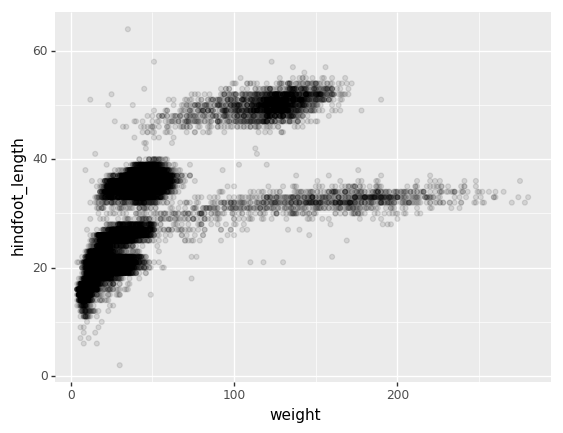
We can also add colors for all the points
(p9.ggplot(data=surveys_complete,
mapping=p9.aes(x='weight', y='hindfoot_length'))
+ p9.geom_point(alpha=0.1, color='blue')
)
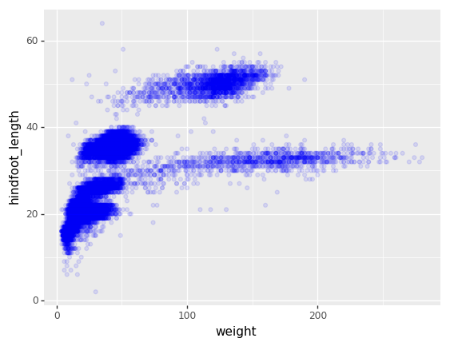
Or to color each species in the plot differently, map the species_id column
to the color aesthetic:
(p9.ggplot(data=surveys_complete,
mapping=p9.aes(x='weight',
y='hindfoot_length',
color='species_id'))
+ p9.geom_point(alpha=0.1)
)

Apart from the adaptations of the arguments and settings of the data, aes
and geom-* elements, additional elements can be added as well, using the +
operator:
- Changing the labels:
(p9.ggplot(data=surveys_complete,
mapping=p9.aes(x='weight', y='hindfoot_length', color='species_id'))
+ p9.geom_point(alpha=0.1)
+ p9.xlab("Weight (g)")
)
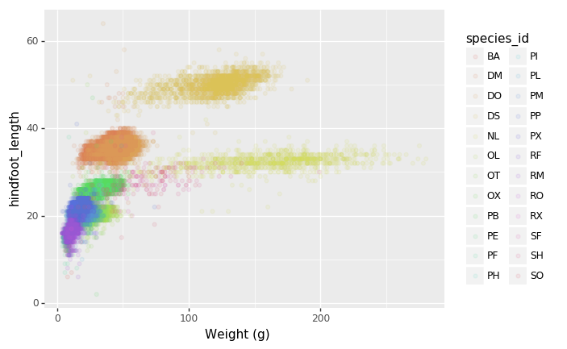
- Defining scale for colors, axes,… For example, a log-version of the x-axis could support the interpretation of the lower numbers:
(p9.ggplot(data=surveys_complete,
mapping=p9.aes(x='weight', y='hindfoot_length', color='species_id'))
+ p9.geom_point(alpha=0.1)
+ p9.xlab("Weight (g)")
+ p9.scale_x_log10()
)

- Changing the theme (
theme_*) or some specific theming (theme) elements. Usually plots with white background look more readable when printed. We can set the background to white using the functiontheme_bw().
(p9.ggplot(data=surveys_complete,
mapping=p9.aes(x='weight', y='hindfoot_length', color='species_id'))
+ p9.geom_point(alpha=0.1)
+ p9.xlab("Weight (g)")
+ p9.scale_x_log10()
+ p9.theme_bw()
+ p9.theme(text=p9.element_text(size=16))
)

Challenge - Bar plot adaptations
Adapt the bar plot of the previous exercise by mapping the
sexvariable to the color fill of the bar chart. Change thescaleof the color fill by providing the colorsblueandorangemanually (see API reference to find the appropriate function).Answers

Plotting distributions
Visualizing distributions is a common task during data exploration and
analysis. To visualize the distribution of weight within each species_id
group, a boxplot can be used:
(p9.ggplot(data=surveys_complete,
mapping=p9.aes(x='species_id',
y='weight'))
+ p9.geom_boxplot()
)
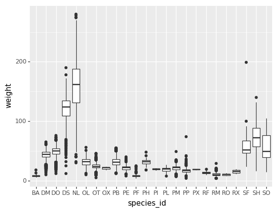
By adding points of the individual observations to the boxplot, we can have a better idea of the number of measurements and of their distribution:
(p9.ggplot(data=surveys_complete,
mapping=p9.aes(x='species_id',
y='weight'))
+ p9.geom_jitter(alpha=0.2)
+ p9.geom_boxplot(alpha=0.)
)

Challenge - distributions
Boxplots are useful summaries, but hide the shape of the distribution. For example, if there is a bimodal distribution, this would not be observed with a boxplot. An alternative to the boxplot is the violin plot (sometimes known as a beanplot), where the shape (of the density of points) is drawn.
In many types of data, it is important to consider the scale of the observations. For example, it may be worth changing the scale of the axis to better distribute the observations in the space of the plot.
- Replace the box plot with a violin plot, see
geom_violin()- Represent weight on the log10 scale, see
scale_y_log10()- Add color to the datapoints on your boxplot according to the plot from which the sample was taken (
plot_id)Hint: Check the class for
plot_id. By usingfactor()within theaesmapping of a variable,plotninewill handle the values as category values.Answers

Plotting time series data
Let’s calculate number of counts per year for each species. To do that we need
to group data first and count the species (species_id) within each group.
yearly_counts = surveys_complete.groupby(['year', 'species_id'])['species_id'].count()
yearly_counts
When checking the result of the previous calculation, we actually have both the
year and the species_id as a row index. We can reset this index to use both
as column variable:
yearly_counts = yearly_counts.reset_index(name='counts')
yearly_counts
Timelapse data can be visualised as a line plot (geom_line) with years on x
axis and counts on the y axis.
(p9.ggplot(data=yearly_counts,
mapping=p9.aes(x='year',
y='counts'))
+ p9.geom_line()
)
Unfortunately this does not work, because we plot data for all the species
together. We need to tell plotnine to draw a line for each species by
modifying the aesthetic function and map the species_id to the color:
(p9.ggplot(data=yearly_counts,
mapping=p9.aes(x='year',
y='counts',
color='species_id'))
+ p9.geom_line()
)
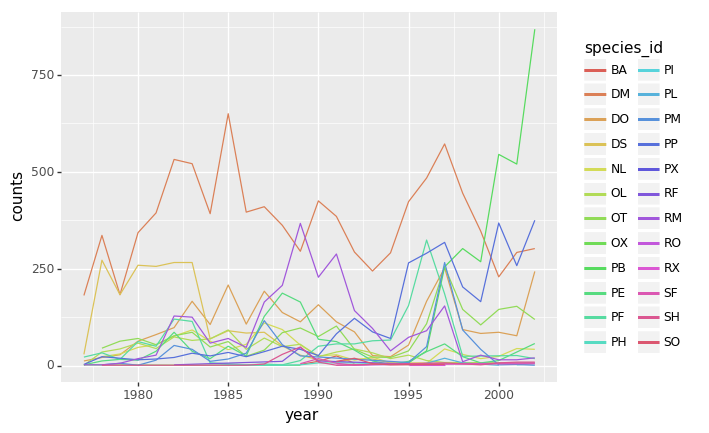
Faceting
As any other library supporting the Grammar of Graphics, plotnine has a
special technique called faceting that allows to split one plot into multiple
plots based on a factor variable included in the dataset.
Consider our scatter plot of the weight versus the hindfoot_length from the
previous sections:
(p9.ggplot(data=surveys_complete,
mapping=p9.aes(x='weight',
y='hindfoot_length',
color='species_id'))
+ p9.geom_point(alpha=0.1)
)
We can now keep the same code and at the facet_wrap on a chosen variable to
split out the graph and make a separate graph for each of the groups in that
variable. As an example, use sex:
(p9.ggplot(data=surveys_complete,
mapping=p9.aes(x='weight',
y='hindfoot_length',
color='species_id'))
+ p9.geom_point(alpha=0.1)
+ p9.facet_wrap("sex")
)
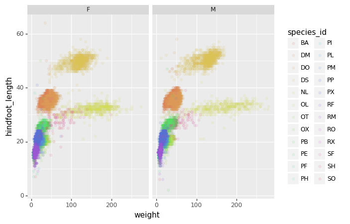
We can apply the same concept on any of the available categorical variables:
(p9.ggplot(data=surveys_complete,
mapping=p9.aes(x='weight',
y='hindfoot_length',
color='species_id'))
+ p9.geom_point(alpha=0.1)
+ p9.facet_wrap("plot_id")
)

The facet_wrap geometry extracts plots into an arbitrary number of dimensions
to allow them to cleanly fit on one page. On the other hand, the facet_grid
geometry allows you to explicitly specify how you want your plots to be
arranged via formula notation (rows ~ columns; a . can be used as a
placeholder that indicates only one row or column).
# only select the years of interest
survey_2000 = surveys_complete[surveys_complete["year"].isin([2000, 2001])]
(p9.ggplot(data=survey_2000,
mapping=p9.aes(x='weight',
y='hindfoot_length',
color='species_id'))
+ p9.geom_point(alpha=0.1)
+ p9.facet_grid("year ~ sex")
)

Challenge - facetting
Create a separate plot for each of the species that depicts how the average weight of the species changes through the years.
Answers
Challenge - facetting
Based on the previous exercise, visually compare how the weights of male and females has changed through time by creating a separate plot for each sex and an individual color assigned to each
species_id.Answers
Further customization
As the syntax of plotnine follows the original R package ggplot2, the
documentation of ggplot2 can provide information and inspiration to customize
graphs. Take a look at the ggplot2 cheat sheet, and think of ways to
improve the plot. You can write down some of your ideas as comments in the Etherpad.
The theming options provide a rich set of visual adaptations. Consider the following example of a bar plot with the counts per year.
(p9.ggplot(data=surveys_complete,
mapping=p9.aes(x='factor(year)'))
+ p9.geom_bar()
)
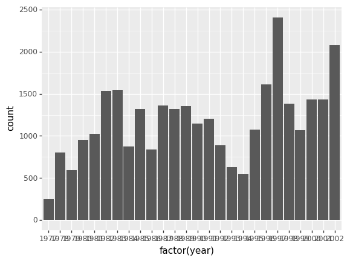
Notice that we use the year here as a categorical variable by using the
factor functionality. However, by doing so, we have the individual year
labels overlapping with each other. The theme functionality provides a way to
rotate the text of the x-axis labels:
(p9.ggplot(data=surveys_complete,
mapping=p9.aes(x='factor(year)'))
+ p9.geom_bar()
+ p9.theme_bw()
+ p9.theme(axis_text_x = p9.element_text(angle=90))
)
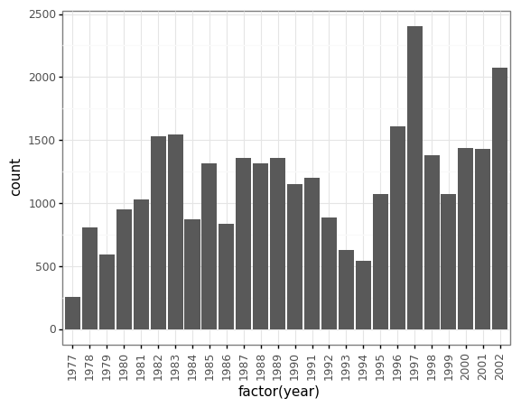
When you like a specific set of theme-customizations you created, you can save them as an object to easily apply them to other plots you may create:
my_custom_theme = p9.theme(axis_text_x = p9.element_text(color="grey", size=10,
angle=90, hjust=.5),
axis_text_y = p9.element_text(color="grey", size=10))
(p9.ggplot(data=surveys_complete,
mapping=p9.aes(x='factor(year)'))
+ p9.geom_bar()
+ my_custom_theme
)
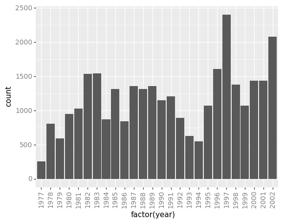
Challenge - customization
Please take another five minutes to either improve one of the plots generated in this exercise or create a beautiful graph of your own.
Here are some ideas:
- See if you can change thickness of lines for the line plot .
- Can you find a way to change the name of the legend? What about its labels?
- Use a different color palette (see http://www.cookbook-r.com/Graphs/Colors_(ggplot2))
After creating your plot, you can save it to a file in your favourite format.
You can easily change the dimension (and its resolution) of your plot by
adjusting the appropriate arguments (width, height and dpi):
my_plot = (p9.ggplot(data=surveys_complete,
mapping=p9.aes(x='weight', y='hindfoot_length'))
+ p9.geom_point()
)
my_plot.save("scatterplot.png", width=10, height=10, dpi=300)
Key Points
The
data,aesvariables and ageometryare the main elements of a plotnine graphWith the
+operator, additionalscale_*,theme_*,xlab/ylabandfacet_*elements are added
Data Ingest and Visualization - Matplotlib and Pandas
Overview
Teaching: 40 min
Exercises: 65 minQuestions
What other tools can I use to create plots apart from ggplot?
Why should I use Python to create plots?
Objectives
Import the pyplot toolbox to create figures in Python.
Use matplotlib to make adjustments to Pandas or plotnine objects.
Putting it all together
Up to this point, we have walked through tasks that are often involved in handling and processing data using the workshop-ready cleaned files that we have provided. In this wrap-up exercise, we will perform many of the same tasks with real data sets. This lesson also covers data visualization.
As opposed to the previous ones, this lesson does not give step-by-step directions to each of the tasks. Use the lesson materials you’ve already gone through as well as the Python documentation to help you along.
Obtain data
There are many repositories online from which you can obtain data. We are
providing you with one data file to use with these exercises, but feel free to
use any data that is relevant to your research. The file
bouldercreek_09_2013.txt
contains stream discharge data, summarized at
15 minute intervals (in cubic feet per second) for a streamgage on Boulder
Creek at North 75th Street (USGS gage06730200) for 1-30 September 2013. If you’d
like to use this dataset, please find it in the data folder.
Clean up your data and open it using Python and Pandas
To begin, import your data file into Python using Pandas. Did it fail? Your data file probably has a header that Pandas does not recognize as part of the data table. Remove this header, but do not simply delete it in a text editor! Use either a shell script or Python to do this - you wouldn’t want to do it by hand if you had many files to process.
If you are still having trouble importing the data as a table using Pandas, check the documentation. You can open the docstring in an ipython notebook using a question mark. For example:
import pandas as pd
pd.read_csv?
Look through the function arguments to see if there is a default value that is
different from what your file requires (Hint: the problem is most likely the
delimiter or separator. Common delimiters are ',' for comma, ' ' for space,
and '\t' for tab).
Create a DataFrame that includes only the values of the data that are useful to you. In the streamgage file, those values might be the date, time, and discharge measurements. Convert any measurements in imperial units into SI units. You can also change the name of the columns in the DataFrame like this:
df = pd.DataFrame({'1stcolumn':[100,200], '2ndcolumn':[10,20]}) # this just creates a DataFrame for the example!
print('With the old column names:\n') # the \n makes a new line, so it's easier to see
print(df)
df.columns = ['FirstColumn', 'SecondColumn'] # rename the columns!
print('\n\nWith the new column names:\n')
print(df)
With the old column names:
1stcolumn 2ndcolumn
0 100 10
1 200 20
With the new column names:
FirstColumn SecondColumn
0 100 10
1 200 20
Matplotlib package
Matplotlib is a Python package that is widely used throughout the scientific Python community to create high-quality and publication-ready graphics. It supports a wide range of raster and vector graphics formats including PNG, PostScript, EPS, PDF and SVG.
Moreover, matplotlib is the actual engine behind the plotting capabilities of both Pandas and plotnine packages. For example, when we call the .plot method on Pandas data objects, we actually use the matplotlib package.
First, import the pyplot toolbox:
import matplotlib.pyplot as plt
Now, let’s read data and plot it!
surveys = pd.read_csv("data/surveys.csv")
my_plot = surveys.plot("hindfoot_length", "weight", kind="scatter")
plt.show() # not necessary in Jupyter Notebooks

Tip
By default, matplotlib creates a figure in a separate window. When using Jupyter notebooks, we can make figures appear in-line within the notebook by executing:
%matplotlib inline
The returned object is a matplotlib object (check it yourself with type(my_plot)),
to which we may make further adjustments and refinements using other matplotlib methods.
Tip
Matplotlib itself can be overwhelming, so a useful strategy is to do as much as you easily can in a convenience layer, i.e. start creating the plot in Pandas or plotnine, and then use matplotlib for the rest.
We will cover a few basic commands for creating and formatting plots with matplotlib in this lesson. A great resource for help creating and styling your figures is the matplotlib gallery (http://matplotlib.org/gallery.html), which includes plots in many different styles and the source codes that create them.
plt pyplot versus object-based matplotlib
Matplotlib integrates nicely with the NumPy package and can use NumPy arrays as input to the available plot functions. Consider the following example data, created with NumPy by drawing 1000 samples from a normal distribution with a mean value of 0 and a standard deviation of 0.1:
import numpy as np
sample_data = np.random.normal(0, 0.1, 1000)
To plot a histogram of our draws from the normal distribution, we can use the hist function directly:
plt.hist(sample_data)

Tip: Cross-Platform Visualization of Figures
Jupyter Notebooks make many aspects of data analysis and visualization much simpler. This includes doing some of the labor of visualizing plots for you. But, not every one of your collaborators will be using a Jupyter Notebook. The
.show()command allows you to visualize plots when working at the command line, with a script, or at the IPython interpreter. In the previous example, addingplt.show()after the creation of the plot will enable your colleagues who aren’t using a Jupyter notebook to reproduce your work on their platform.
or create matplotlib figure and axis objects first and subsequently add a histogram with 30
data bins:
fig, ax = plt.subplots() # initiate an empty figure and axis matplotlib object
ax.hist(sample_data, 30)
Although the latter approach requires a little bit more code to create the same plot, the advantage is that it gives us full control over the plot and we can add new items such as labels, grid lines, title, and other visual elements. For example, we can add additional axes to the figure and customize their labels:
fig, ax1 = plt.subplots() # prepare a matplotlib figure
ax1.hist(sample_data, 30)
# Add a plot of a Beta distribution
a = 5
b = 10
beta_draws = np.random.beta(a, b)
# adapt the labels
ax1.set_ylabel('density')
ax1.set_xlabel('value')
# add additional axes to the figure
ax2 = fig.add_axes([0.125, 0.575, 0.3, 0.3])
#ax2 = fig.add_axes([left, bottom, right, top])
ax2.hist(beta_draws)
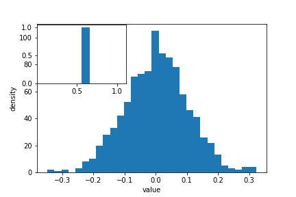
Challenge - Drawing from distributions
Have a look at
numpy.randomdocumentation. Choose a distribution you have no familiarity with, and try to sample from and visualize it.
Link matplotlib, Pandas and plotnine
When we create a plot using pandas or plotnine, both libraries use matplotlib to create those plots. The plots created in pandas or plotnine are matplotlib objects, which enables us to use some of the advanced plotting options available in the matplotlib library. Because the objects output by pandas and plotnine can be read by matplotlib, we have many more options than any one library can provide, offering a consistent environment to make publication-quality visualizations.
fig, ax1 = plt.subplots() # prepare a matplotlib figure
surveys.plot("hindfoot_length", "weight", kind="scatter", ax=ax1)
# Provide further adaptations with matplotlib:
ax1.set_xlabel("Hindfoot length")
ax1.tick_params(labelsize=16, pad=8)
fig.suptitle('Scatter plot of weight versus hindfoot length', fontsize=15)
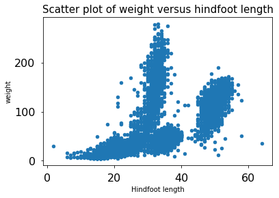
To retrieve the matplotlib figure object from plotnine for customization, use the draw() function in plotnine:
import plotnine as p9
myplot = (p9.ggplot(data=surveys,
mapping=p9.aes(x='hindfoot_length', y='weight')) +
p9.geom_point())
# convert output plotnine to a matplotlib object
my_plt_version = myplot.draw()
# Provide further adaptations with matplotlib:
p9_ax = my_plt_version.axes[0] # each subplot is an item in a list
p9_ax.set_xlabel("Hindfoot length")
p9_ax.tick_params(labelsize=16, pad=8)
p9_ax.set_title('Scatter plot of weight versus hindfoot length', fontsize=15)
plt.show() # not necessary in Jupyter Notebooks

Challenge - Pandas and matplotlib
Load the streamgage data set with Pandas, subset the week of the 2013 Front Range flood (September 11 through 15) and create a hydrograph (line plot) of the discharge data using Pandas, linking it to an empty maptlotlib
axobject. Create a second axis that displays the whole dataset. Adapt the title and axes’ labels using matplotlib.Answers
Saving matplotlib figures
Once satisfied with the resulting plot, you can save the plot with the .savefig(*args) method from matplotlib:
fig.savefig("my_plot_name.png")
which will save the fig created using Pandas/matplotlib as a png file with the name my_plot_name
Tip: Saving figures in different formats
Matplotlib recognizes the extension used in the filename and supports (on most computers) png, pdf, ps, eps and svg formats.
Challenge - Saving figure to file
Check the documentation of the
savefigmethod and check how you can comply to journals requiring figures asAnswers
Make other types of plots:
Matplotlib can make many other types of plots in much the same way that it makes two-dimensional line plots. Look through the examples in
http://matplotlib.org/users/screenshots.html and try a few of them (click on the
“Source code” link and copy and paste into a new cell in ipython notebook or
save as a text file with a .py extension and run in the command line).
Challenge - Final Plot
Display your data using one or more plot types from the example gallery. Which ones to choose will depend on the content of your own data file. If you are using the streamgage file
bouldercreek_09_2013.txt, you could make a histogram of the number of days with a given mean discharge, use bar plots to display daily discharge statistics, or explore the different ways matplotlib can handle dates and times for figures.
Key Points
Matplotlib is the engine behind plotnine and Pandas plots.
The object-based nature of matplotlib plots enables their detailed customization after they have been created.
Export plots to a file using the
savefigmethod.
Accessing SQLite Databases Using Python and Pandas
Overview
Teaching: 20 min
Exercises: 25 minQuestions
What if my data are stored in an SQL database? Can I manage them with Python?
How can I write data from Python to be used with SQL?
Objectives
Use the sqlite3 module to interact with a SQL database.
Access data stored in SQLite using Python.
Describe the difference in interacting with data stored as a CSV file versus in SQLite.
Describe the benefits of accessing data using a database compared to a CSV file.
Python and SQL
When you open a CSV in python, and assign it to a variable name, you are using your computers memory to save that variable. Accessing data from a database like SQL is not only more efficient, but also it allows you to subset and import only the parts of the data that you need.
In the following lesson, we’ll see some approaches that can be taken to do so.
The sqlite3 module
The sqlite3 module provides a straightforward interface for interacting with
SQLite databases. A connection object is created using sqlite3.connect(); the
connection must be closed at the end of the session with the .close() command.
While the connection is open, any interactions with the database require you to
make a cursor object with the .cursor() command. The cursor is then ready to
perform all kinds of operations with .execute().
import sqlite3
# Create a SQL connection to our SQLite database
con = sqlite3.connect("data/portal_mammals.sqlite")
cur = con.cursor()
# The result of a "cursor.execute" can be iterated over by row
for row in cur.execute('SELECT * FROM species;'):
print(row)
# Be sure to close the connection
con.close()
Queries
One of the most common ways to interact with a database is by querying: retrieving data based on some search parameters. Use a SELECT statement string. The query is returned as a single tuple or a tuple of tuples. Add a WHERE statement to filter your results based on some parameter.
import sqlite3
# Create a SQL connection to our SQLite database
con = sqlite3.connect("data/portal_mammals.sqlite")
cur = con.cursor()
# Return all results of query
cur.execute('SELECT plot_id FROM plots WHERE plot_type="Control"')
cur.fetchall()
# Return first result of query
cur.execute('SELECT species FROM species WHERE taxa="Bird"')
cur.fetchone()
# Be sure to close the connection
con.close()
Accessing data stored in SQLite using Python and Pandas
Using pandas, we can import results of a SQLite query into a dataframe. Note that you can use the same SQL commands / syntax that we used in the SQLite lesson. An example of using pandas together with sqlite is below:
import pandas as pd
import sqlite3
# Read sqlite query results into a pandas DataFrame
con = sqlite3.connect("data/portal_mammals.sqlite")
df = pd.read_sql_query("SELECT * from surveys", con)
# Verify that result of SQL query is stored in the dataframe
print(df.head())
con.close()
Storing data: CSV vs SQLite
Storing your data in an SQLite database can provide substantial performance improvements when reading/writing compared to CSV. The difference in performance becomes more noticeable as the size of the dataset grows (see for example these benchmarks).
Challenge - SQL
Create a query that contains survey data collected between 1998 - 2001 for observations of sex “male” or “female” that includes observation’s genus and species and site type for the sample. How many records are returned?
Create a dataframe that contains the total number of observations (count) made for all years, and sum of observation weights for each site, ordered by site ID.
Storing data: Create new tables using Pandas
We can also us pandas to create new tables within an SQLite database. Here, we run we re-do an exercise we did before with CSV files using our SQLite database. We first read in our survey data, then select only those survey results for 2002, and then save it out to its own table so we can work with it on its own later.
import pandas as pd
import sqlite3
con = sqlite3.connect("data/portal_mammals.sqlite")
# Load the data into a DataFrame
surveys_df = pd.read_sql_query("SELECT * from surveys", con)
# Select only data for 2002
surveys2002 = surveys_df[surveys_df.year == 2002]
# Write the new DataFrame to a new SQLite table
surveys2002.to_sql("surveys2002", con, if_exists="replace")
con.close()
Challenge - Saving your work
For each of the challenges in the previous challenge block, modify your code to save the results to their own tables in the portal database.
What are some of the reasons you might want to save the results of your queries back into the database? What are some of the reasons you might avoid doing this.
Key Points
sqlite3 provides a SQL-like interface to read, query, and write SQL databases from Python.
sqlite3 can be used with Pandas to read SQL data to the familiar Pandas DataFrame.
Pandas and sqlite3 can also be used to transfer between the CSV and SQL formats.